<style>
    /* 基础样式：沉浸式阅读体验 */
    body { 
        font-family: "Georgia", "Microsoft YaHei", "Songti SC", serif;
        line-height: 1.8; 
        color: #2c3e50;
        max-width: 850px; 
        margin: 0 auto; 
        padding: 40px 20px; 
        background-color: #fcfcfc;
    }

    /* 章节单元 */
    .chapter-unit { margin-bottom: 80px; }

    /* 标题体系 */
    h1 { 
        font-size: 3em; 
        color: #1a252f; 
        border-bottom: 4px solid #6c5ce7; 
        padding-bottom: 20px; 
        margin-top: 0; 
        line-height: 1.2;
    }
    h1 small {
        display: block;
        font-size: 0.5em;
        color: #7f8c8d;
        margin-top: 10px;
        font-weight: normal;
    }
    h2 { font-size: 1.8em; color: #c0392b; margin-top: 50px; border-left: 5px solid #c0392b; padding-left: 15px; }
    h3 { font-size: 1.4em; color: #2980b9; margin-top: 35px; font-weight: bold; }
    h4 { font-size: 1.2em; color: #34495e; margin-top: 25px; font-weight: bold; }

    /* 正文排版 */
    p { margin-bottom: 1.5em; text-align: justify; font-size: 1.1em; }
    
    /* 列表 */
    ul, ol { margin-bottom: 1.5em; padding-left: 2em; }
    li { margin-bottom: 0.5em; }

    /* 侧边栏/特殊区域 */
    .sidebar { 
        background: #f0f7fb; 
        padding: 25px; 
        border-left: 5px solid #3498db; 
        margin: 30px 0; 
        border-radius: 0 8px 8px 0;
        font-family: "Segoe UI", "Microsoft YaHei", sans-serif;
    }
    .sidebar h3 { margin-top: 0; color: #2c3e50; }

    .detailed-explanation {
        background: #fff8e1;
        border: 1px solid #ffe0b2;
        padding: 25px;
        margin: 30px 0;
        border-radius: 8px;
    }
    .detailed-explanation h3 { color: #e67e22; border-bottom: 2px solid #ffcc80; padding-bottom: 10px; }
    
    .concept-check {
        background-color: #eafaf1;
        border: 1px solid #a3e4d7;
        padding: 15px;
        margin: 20px 0;
        border-radius: 5px;
        color: #145a32;
        font-weight: bold;
    }
    .concept-check::before { content: "✅ "; }

    .ultimate-question {
        background-color: #2d3436;
        color: #dfe6e9;
        padding: 25px;
        margin: 40px 0;
        border-radius: 8px;
    }
    .ultimate-question h3 { color: #ffeaa7; margin-top: 0; }

    /* 表格 */
    table {
        width: 100%;
        border-collapse: collapse;
        margin: 30px 0;
        font-size: 0.95em;
    }
    th, td {
        border: 1px solid #bdc3c7;
        padding: 12px;
        text-align: center;
    }
    th { background-color: #ecf0f1; font-weight: bold; }

    /* 图片样式 */
    .image-placeholder { 
        background: #f8f9fa; 
        border: 1px dashed #bdc3c7; 
        display: flex; 
        align-items: center; 
        justify-content: center;
        margin: 30px auto 10px auto; 
        color: #7f8c8d; 
        font-family: monospace; 
        font-size: 0.9em;
        position: relative;
    }
    .image-placeholder::after {
        content: "🖼️ Area: " attr(data-bbox);
        position: absolute;
        bottom: 5px;
        right: 5px;
        font-size: 0.7em;
        opacity: 0.7;
    }
    .caption { 
        font-size: 0.9em; 
        color: #555; 
        text-align: center; 
        margin-bottom: 40px; 
        font-style: italic; 
        border-bottom: 1px solid #eee;
        padding-bottom: 10px;
    }
    .caption strong { color: #c0392b; font-style: normal; }

    /* 习题区域 */
    .exercises { 
        background: #fffcf0; 
        padding: 30px; 
        margin: 50px 0; 
        border: 2px solid #f0e6d2; 
        border-radius: 12px; 
    }
    .question-list li { margin-bottom: 15px; }

    /* 科学符号 */
    sup { font-size: 0.75em; }
</style>

<article class="chapter-unit">

    <!-- Page 1 Cover Image -->
    
    <div class="caption">
        <strong>第6章 封面图</strong><br>
        密集的恒星场，展示了宇宙中恒星的丰富与多彩。
    </div>

    <!-- Page 2 Content -->
    <h1>第17章 恒星 <small>巨星、矮星和主序星</small></h1>

    <div class="sidebar">
        <h3>学习目标</h3>
        <p>本章的学习将使你能够：</p>
        <ol>
            <li>解释如何确定恒星的距离。</li>
            <li>描述恒星在空间中的运动，并说出如何在地球上测量它们的运动。</li>
            <li>区别光度和视亮度，并说明如何确定恒星的光度。</li>
            <li>说明根据恒星的颜色、表面温度和光谱特性对它们进行分类的用途。</li>
            <li>说明如何利用物理定律来估计恒星的大小。</li>
            <li>描述如何用赫罗图来鉴别恒星的性质。</li>
            <li>概括如何利用恒星光谱特性的知识来估计它的距离。</li>
            <li>说明如何测量恒星的质量，以及质量如何与恒星的其他性质相互关联。</li>
        </ol>
        <p><strong>精通天文学</strong><br>访问 MasteringAstronomy 网站的学习板块，获取小测验、动画、视频、互动图，以及自学教程。</p>
    </div>

    <p>我们已经研究了地球、月球、太阳系和太阳。要继续往我们的清单里加入宇宙事物，我们必须摆脱我们所处的环境，深入太空深处。在本章中，我们将距离上迈出一步，考虑一般类型的恒星。我们的主要目标是理解组成星座的恒星的本质，以及无数的我们的肉眼无法察觉的更遥远的恒星。然而，我们将集中讨论如何确定它们共同的物理和化学性质，而不是研究个体的特殊性。</p>

    <p>成千上万的恒星有规律地散布在天空中。通过编目并比较它们的基本属性——光度、温度、成分、质量和半径——天文学家获得了恒星如何形成和演化的新见解。如同太阳系中的比较行星学那样，恒星的研究在进一步了解银河系和我们所处的宇宙方面起着至关重要的作用。</p>

    <div class="sidebar">
        <h3>知识全景</h3>
        <p>夜空中到处都是恒星，肉眼大约可见6000颗恒星，分布在88个星座中。如果使用双筒望远镜或小型天文望远镜，可见更多的上百万颗恒星。恒星的总数是无法计量的，只有相当少的恒星被详细研究过。然而，相比宇宙中其他任何天体，正是恒星告诉了我们更多有关天文学基础的知识。</p>
    </div>
    
    <div class="image-placeholder" data-bbox="[780, 50, 950, 200]" style="width: 100%; aspect-ratio: 6.0;"></div>
    <div class="caption">
        <strong>左图：</strong> 哈勃太空望远镜最近拍摄了绚烂的球状星团M9，它由约300,000颗恒星组成一群，分布在大约25光年的范围内。如同一个旋涡状的蜂窝，这一位于蛇夫座的区域距离我们大约25,000光年。其中，微红色的恒星年龄大约是太阳的两倍。[欧洲航天局 (ESA) / 美国国家航空航天局 (NASA)]
    </div>

    <!-- Page 3 -->
    <h2>17.1 太阳邻近区域</h2>

    <p>我们所处的星系——银河系——是由恒星和星际物质在引力作用下聚集在一起的巨大天体。它包含超过1000亿颗恒星，遍布将近100,000光年的巨大空间，它们都绕着距离地球约25,000光年的银河系中心旋转。事实上，太阳——还有其他每一颗我们凝视夜空时所见的恒星——都是这个庞大系统中的一分子。在这一章里，我们将介绍一些测量距离的方法，通过这些方法，天文学家将他们的研究扩展到越来越遥远的太空，在这样的巨大尺度下标定恒星的空间分布。</p>

    <p>与行星一样，了解恒星的距离是确定它们的其他性质所必不可少的。瞩目探视我们银河系所在的空间，天文学家能够观测并研究数百万颗独特的恒星。通过观测其他遥远的星系，我们可以从统计上推断有数以万亿计的更多的恒星存在。总之，可观测的宇宙可能包含了几十兆亿颗（1兆亿=10<sup>21</sup>）恒星。然而，值得注意的是，尽管这一数字大得令人难以置信，但恒星的本质——它们在天空中的外观，它们的诞生、死亡，甚至是它们和周围环境的相互作用——可以仅仅通过几个基本的恒星物理量来了解：光度（亮度）、温度（颜色）、化学成分、大小和质量。(5.1节)</p>

    <p>恒星距离测量和恒星性质分类两个方面的进展齐头并进。正如我们即将看到的那样，随着越来越多恒星的距离成为已知，天文学家获得了有关恒星性质的新见解，这些见解反过来提供了新的测量恒星距离的方法，并且适用于测量更加遥远的距离。从多方面来看，这些测距方法如何手挽手、肩并肩地发展起来的故事，正是现代天文学的历史。</p>

    <h3>恒星视差</h3>

    <p>回忆一下在第1章里，测量员和天文学家是如何利用视差来测量地球与太阳系天体距离的。视差是随着观测者视线的变化，前景物体相对于遥远背景的视位移。(1.6节) 要确定物体的视差，我们要从某个基线的两端对它进行观测，并且测量物体的视位移引起的视线角度变化。在天文领域，通常可以通过比较在基线两端拍摄的照片来获得这一角度。</p>
    
    <p>随着物体距离的增加，视差变得更小，从而更难以测量。即使是距离地球最近的恒星也是如此遥远，地球上没有足够长的基线可以用来精确地测量它们的距离。从地球上不同的地点观测，它们的视差变化还是太小了。然而，如图17.1所示（也可见图1.30），在一年中不同的时刻观测同一颗恒星，然后再比较我们的观测，我们可以将基线延长为地球绕太阳公转轨道的直径，即2个天文单位。只有利用这样非常长的基线，某些恒星的视差才是可测量的。如图中所示，随着我们从地球公转轨道的一端运动到另一端，恒星的视差角——或者，更普遍地被称为“视差”——通常被定义为它相对于背景的视位移的一半。</p>

    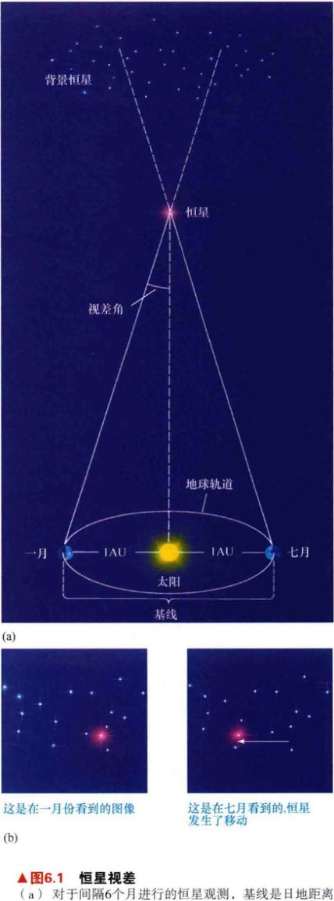
    <div class="caption">
        <strong>图17.1 恒星视差</strong><br>
        (a) 对于间隔6个月进行的恒星观测，基线是日地距离的2倍或2个天文单位。与图1.30相比，虽然展示的是一样的几何图形，但这里的尺度要更小。(b) 视位移（这里夸张地用白色箭头表示）通常使用照相方法测量，如图中所示的红色恒星。一年当中不同时刻对同一天空区域拍摄的图像可以确定恒星相对于背景恒星的视运动。
    </div>

    <!-- Page 4 -->
    <p>由于恒星视差如此之小，天文学家发现用角秒来度量视差比用角度方便。如果我们问，一颗观测到的视差正好等于1"的恒星的距离是多少，答案是206,265 AU，或 3.1×10<sup>16</sup>m。（详细说明1-2）天文学家称这一距离为<strong>1秒差距</strong> (1 pc)，即“一角秒的视差”。由于视差随着距离的增加而减小，我们可以用下面的公式来将恒星的视差和距离联系起来：</p>
    
    <p style="text-align: center; font-weight: bold;">距离（以秒差距为单位）= 1 / 视差（以角秒为单位）</p>

    <p>因此，测量视差为1"的恒星距离太阳为1pc。秒差距的定义使得距离和视差角之间的转换变得容易：一个视差为0.5"的天体距离为 1/0.5 = 2 pc，一个视差为0.1"的天体距离为 1/0.1 = 10 pc，以此类推。1 pc 大约等于3.3光年。</p>

    <h3>我们最近的邻居</h3>

    <p>距离地球（即太阳）最近的恒星是半人马座的比邻星。这颗恒星是一个三聚星系统的成员之一（三颗独立的恒星彼此互相绕转，并由引力束缚在一起），该三星系统被称为半人马座阿尔法复合体。其中，比邻星的视差最大，为0.77"，这意味着它的距离约为 1/0.77 = 1.3 pc——约为270,000 AU 或 4.3 光年。最近的恒星到地球的距离差不多是日地距离的300,000倍！在银河系内，这是一个相当典型的恒星际间的距离。</p>

    <p>广阔的距离有时可以通过类比来领会。将地球想象成一粒沙子，在距离为1m的地方绕着弹珠大小的太阳公转。最近的恒星，也就是一颗弹珠大小的天体，距离却超过270km远。除我们太阳系内的其他大行星外，两颗相距270km的恒星之间就没有其他什么重要的天体了，行星的尺寸从沙粒大到毫米颗粒大，并且都位于距“太阳”50m的距离以内。这其中就是空乏的恒星际空间。</p>

    <p>距离太阳第二近的邻居是比半人马座阿尔法复合体更远的巴纳德星。它的视差是0.55"或者说6光年——在上一段的模型中距离地球370km。图17.2是距离我们最近的银河系邻居的地图——在距地球4pc的距离内，大约有30颗左右的恒星。</p>

    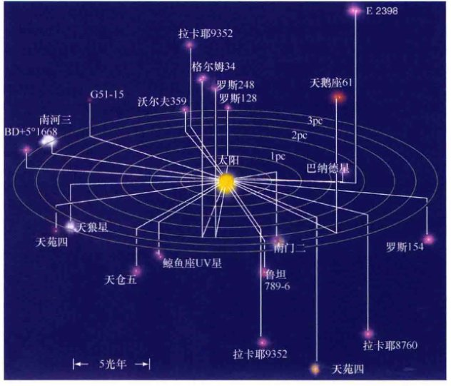
    <div class="caption">
        <strong>图17.2 太阳的邻居</strong><br>
        距离太阳最近的30颗恒星，投影在图中以便于揭示它们之间的三维关系。所有恒星都距离地球4 pc（13光年）以内。圆形网格表示在银道面内到太阳的距离，竖线表示垂直于银道面的距离。
    </div>

    <!-- Page 5 -->
    <p>由于地球大气的湍动虚化，从地面观测得到的恒星图像通常是半径约为1"的圆盘。(4.4节) 然而，天文学家有专业设备，常规可测得的恒星视差可达0.03"，甚至更小，对应的恒星距地球大约在30 pc以内（100光年）。有几千颗恒星位于该范围之内，它们中的大多数的光度比太阳低得多，无法通过肉眼看到。高分辨率的自适应光学系统使恒星位置的测量精度更高，有些情况下可将视差的范围扩展到超过100 pc，然而，这样的测量仍然没有被“常规化”。(4.4节)</p>

    <p>将测量仪器放置在地球大气层之外的太空，可以取得更好的精度。在20世纪90年代，欧洲<strong>依巴谷</strong>卫星取得的数据将精确测量的视差范围扩展到200 pc之外，包含将近100万颗星。尽管如此，我们银河系内绝大多数恒星也比此更为遥远。在依巴谷卫星之后，欧洲航天局 (ESA) 制订了雄心勃勃的计划，以大幅扩展恒星测量的范围。欧洲航天局的盖亚项目定于2013年发射，将惊人地达到10,000 pc，覆盖更大的银河系范围，包含将近10亿颗恒星！除了前所未有地精确描绘银河系的结构外，这一项目还能让天文学家详细地研究所有质量的近邻恒星的性质，并且极大地扩展了我们对系外行星系统的认识。有了这些新的数据，在30年的时间跨度内，几乎所有天文学研究所依赖的基本恒星数据库将扩展100万倍。这简直就是革命性的结果。</p>

    <h3>恒星自行</h3>
    <p>视差除了造成恒星的视运动外，恒星本身在星系间也有空间运动。在《今日天文——星系世界和宇宙的一生》第1章，我们将了解天文学家如何测量太阳绕银心的实际运动。然而，相对于太阳——随着我们绕着我们的母恒星在空间中运动，地球上的天文学家看到的恒星运动包含两种成分。恒星的<strong>视向速度</strong>——沿着视线方向的速度——可以利用多普勒效应来测量；(2.5节) 对于许多邻近的恒星来说，它们的<strong>横向速度</strong>——垂直于视线方向的速度——可以通过仔细地监测恒星在天空中的运动来确定。</p>
    
    <p>图17.3比较了巴纳德星附近天区的两幅照片。这两幅照片是在一年中的同一天拍摄的，但年份差了22年。注意那颗用箭头指出的恒星，已经在所示的22年内发生了移动：如果将两幅照片叠加，视场内的其他恒星图像将一一对应，但巴纳德星的图像不会对应上。由于这些照片拍摄时，地球位于其公转轨道上的同一点，因此，观测到的位移不会是由于地球绕太阳运动而造成的视差。相反，这表明巴纳德星相对于太阳有着真实的空间运动。</p>

    
    <div class="caption">
        <strong>图17.3 自行</strong><br>
        比较两幅相隔22年拍摄的照片后，证明了巴纳德星的真实空间运动（如箭头所示）。[哈佛大学天文台]
    </div>

    <p>从地球上观测并修正视差后得到的恒星在天空中的周年运动被称为<strong>自行</strong>。它描述了恒星相对于太阳的运动速度的横向分量。（在银河系内运动时，恒星和太阳都有空间运动；然而，从地球上观测，只有它们之间的相对运动会改变恒星在天空中的位置。）和视差一样，自行的测量也以角位移表示。由于所涉及的角度一般都非常小，所以自行通常表示为角秒每年。巴纳德星在22年内移动了228"，因此它的自行是 228"/22年，即 10.4"/年。</p>

    <p>已知恒星的自行和它的距离，那么恒星的横向速度就很容易计算得到。在巴纳德星所处的距离上 (1.8 pc)，10.4" 的角度对应的物理位移为0.000091 pc，约为28亿千米。巴纳德星需要花一年的时间 (3.2 × 10<sup>7</sup> s) 才能运动这么大的距离，因此它的横向速度为28亿千米 / 3.2 × 10<sup>7</sup> s，等于89 km/s。（详细说明 1-2）虽然恒星的横向速度一般非常大——几十甚至是几百千米每秒——但它们距离太阳都很遥远，意味着它们的自行会很小，通常我们需要花很多年才能觉察出它们在天空中的运动。很可能，图17.3里的每一颗恒星相对于太阳都有横向运动。然而，只有巴纳德星的自行才大到在这些图中能被发现。事实上，巴纳德星拥有恒星中最大的自行。只有几百颗恒星的自行大于1"/年。</p>

    <!-- Page 6 -->
    
    <div class="caption">
        <strong>图17.4 实际的空间运动</strong><br>
        这幅图梗概显示了半人马座阿尔法恒星系统相对于太阳系的运动。速度的横向分量由观测得到的恒星系统的自行得出。径向分量利用半人马座阿尔法星光谱中谱线的多普勒位移得到。红色箭头指示出真实的空间运动速度，由两个分量合并而成。
    </div>

    <p>现在考虑一下我们最近的邻居，半人马座阿尔法星系统，相对于我们太阳系的三维运动，如图17.4所描绘的那样。测量得到半人马座阿尔法星的自行为3.7"/年。在半人马座阿尔法星1.35 pc的距离处，这一测量结果意味着横向速度为24 km/s。我们可以利用多普勒效应来确定另一运动分量——视向速度。半人马座阿尔法星的谱线微微蓝移了一点——约0.0067%——天文学家测量该恒星系统的视向速度（相对于太阳）朝向我们为 300,000 km/s × 6.7 × 10<sup>-5</sup> = 20 km/s。(2.5节)</p>

    <p>半人马座阿尔法星的真实空间运动是多少？这个太阳系外恒星系统会不会在未来某个时候与太阳系发生碰撞？答案是否定的。半人马座阿尔法星的横向速度将使之与太阳保持距离。我们可以根据勾股定理将横向速度 (24 km/s) 和视向速度 (20 km/s) 合并起来，如图17.4所示。总速度为大约31 km/s，运动方向为水平红色箭头 $\sqrt{24^2 + 20^2}$ 所示。这幅图表明，半人马座阿尔法星距离我们最近不会超过1 pc，而且在距离现在的280个世纪后才会发生。</p>

    <div class="concept-check">
        <h4>概念理解检查</h4>
        <p>❓ 为什么我们一般对遥远恒星的空间运动速度所知甚少？</p>
    </div>

    <h2>17.2 光度和视亮度</h2>

    <p>光度是恒星的固有特性——它完全不依赖于观测者的观测位置和运动速度。光度有时也被称为恒星的绝对亮度。然而，当我们观测一颗恒星时，我们所见的并不是恒星的光度，而是它的<strong>视亮度</strong>——在单位时间内到达单位面积的某种光敏表面或装置 [如电荷耦合器件 (CCD) 芯片或人眼] 的总能量。视亮度测量的不是恒星的光度，而是从地球上观测时所接收到的来自于恒星的<strong>能量通量</strong>（每单位面积每单位时间内接收的能量）。一颗恒星的视亮度，取决于其距地球的距离。在本节中，我们将更详细地讨论这两种重要的物理量彼此是如何相关的。</p>

    <h3>又一个平方反比律</h3>

    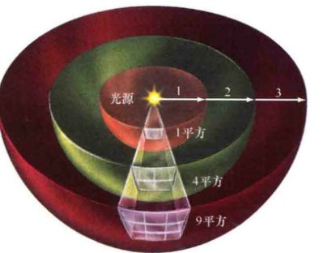
    <div class="caption">
        <strong>解说图17.5 平方反比律</strong><br>
        随着光线远离诸如恒星这样的光源，光线将逐渐被稀释，散布在越来越大的表面上（这里描绘为球壳的一部分）。因此，探测器所接收到的辐射总量（光源的视亮度）与到光源距离的平方成反比。
    </div>

    <p>图17.5展示了光线如何离开恒星并在太空中传播。辐射向外移动，穿过以光源为中心的半径不断增加的假想球体。单位时间内离开恒星的辐射总量——恒星的光度——是常数，因此光线传播的距离光源越远，穿过每单位面积的能量越少。想象一下，随着能量扩散到太空中，能量传播的面积越来越大，因此能量更加分散，被“稀释”。</p>
    
    <p>由于球体的面积随着半径的平方增长，因此单位面积内的能量——通过人眼或望远镜见到的恒星的视亮度——与到恒星距离的平方成反比。</p>

    <!-- Page 7 -->
    
    <div class="caption">
        <strong>图17.6 光度</strong><br>
        恒星A和B有着不同的光度，但对地球上的观测者来说，如果亮一些的恒星B要比暗一些的恒星A距离更远的话，它们看起来可能会一样亮。
    </div>

    <p>如果恒星的距离翻倍，那么它看起来会暗2<sup>2</sup>倍，即4倍；距离增加3倍，那么它的视亮度会减少3<sup>2</sup>倍，即9倍，以此类推。</p>
    <p>当然，恒星的光度也会影响它的视亮度。光度翻倍将使穿过围绕恒星的任意球壳层的能量翻倍，因此视亮度也会翻倍。我们因此可以认为，恒星的视亮度与恒星的光度成正比，与距离的平方成反比：</p>

    <p style="text-align: center; font-weight: bold;">视亮度（能量通量） ∝ 光度 / 距离<sup>2</sup></p>

    <p>因此，如果（只有这样）两颗一样的恒星位于距离地球一样远的地方，那么它们的视亮度一样亮。</p>

    <p>然而，如图17.6所示，两颗不一样的恒星也可能有着同样的视亮度，如果光度更大的那颗恒星距离更远一些的话。明亮的恒星（即视亮度大的恒星）可能会发出强烈的辐射（高光度），也可能位于地球附近，或者两者兼而有之。没有额外信息的话，我们无法分辨光度增加和距离减少所带来的影响。同样地，一颗暗星（有着小的视亮度的恒星）可能是弱的辐射源（低光度），也可能距离地球很远，或两者兼而有之。</p>

    <p>确定恒星的光度实际是一个双重任务。首先，天文学家必须通过测量在给定时间内由望远镜探测到的能量来确定恒星的视亮度。其次，恒星的距离必须测量得到——近邻恒星利用视差，更遥远的恒星利用其他手段得到（稍后讨论）。然后才能利用平方反比律得到光度。这也是我们之前在第5章里，在讨论天文学家如何测量太阳光度时用到的基本推理方法。（用新的术语表示，太阳常数其实是太阳的视亮度。）(5.1节)</p>

    <h3>星等标度</h3>

    <p>天文学家通常使用被称为<strong>星等标度</strong>的概念来测量视亮度，而不是用国际单位制（如在第5章里太阳常数所使用的单位，W/m<sup>2</sup>），他们发现这样的表示要方便得多。(5.1节) 这一标度可以追溯到公元前2世纪，当古希腊天文学家依巴谷将肉眼可见的恒星分为六类时。最亮的恒星被分为一等。第二亮的恒星星等被标为二等，以此类推，直到肉眼能见到的最暗的恒星，它们被分成六等星。一等星（最亮）到六等星（最暗）包括了古人所知的所有恒星。注意，星等是真正用视亮度（能量通量）来分级的——星等大意味着是暗星。就像日常用语中“一流”意味着“好”那样，天文学中的“一等”意味着“明亮”。</p>

    <p>当天文学家开始使用装配有复杂探测器的望远镜来测量从恒星接收到的光芒时，他们很快发现了有关星等标度的两个重要事项。首先，依巴谷定义的1至6等的范围所覆盖的视亮度变化约为100倍——一等星大约要比六等星亮100倍。其次，人眼的生理特点决定了，星等每变化1等，对应的视亮度变化约为2.5倍。也就是说，对人眼来说，一等星比二等星亮约2.5倍，二等星比三等星亮约2.5倍，以此类推。（将2.5倍的因子组合起来，你可以证明一等星实际比六等星亮 $2.5^5 \approx 100$ 倍。）</p>

    <p>现代天文学家在很多方面修改和扩展了星等标度方法。首先，我们现在定义天体5个星等的变化（星等从1等变到6等，或从2等变到7等）对应于视亮度恰好变化100倍。第二，由于我们实际讨论的是视（而不是绝对）亮度，因此依巴谷分级系统中的数字被称为<strong>视星等</strong>。第三，标度不再局限为整数：视星等为4.5等的恒星视亮度介于4等星和5等星之间。最后，星等扩展到1等和6等之外：非常明亮的天体的视星等甚至可以比1等小得多，非常暗弱的天体的视星等可以远远大于6等。</p>

    <!-- Page 8 -->
    
    <div class="caption">
        <strong>互动图17.7 视星等</strong><br>
        本图列举了一些天体的视星等，以及一些用于观测这些天体的望远镜的极限星等（即能够探测到的最暗星等）。
    </div>

    <p>图17.7列举了一些天体的视星等，从视星等为-26.7的太阳开始，到哈勃或凯克望远镜能够探测到的最暗天体，视星等为30等的天体——大致相当于从等于地球直径的距离处观看一只萤火虫那么暗。注意，这样的星等变化范围所对应的视亮度变化其实非常大（实际上，亮度变化倍数为 $100^{56.7/5} \approx 5 \times 10^{22}$ 倍）。事实上，天文学家采用这种标度方法的一个主要原因是，这样能够将观测到的恒星属性的大范围变化压缩成更为“可控”的形式。</p>

    <p>当在某个距离上观测恒星时，测出的视星等是恒星的视亮度。然而，为了比较恒星内在的或者说绝对的性质，天文学家假想在10 pc的标准距离上观测所有的恒星。这里采用10 pc没有任何特殊的原因——仅仅是为了方便。当把恒星放在距离观测者10 pc时，所得到的恒星视星等被称为其<strong>绝对星等</strong>。由于在这样的定义下，恒星的距离固定，因此绝对星等测量的是恒星的绝对亮度，即光度。</p>

    <p>如果恒星的距离已知，我们也可以利用早前讨论过的平方反比律，把绝对星等和视星等联系起来。当距离我们超过10 pc的恒星移动到10 pc处时，它的视亮度会增加，视星等因此减小。因此距离地球超过10 pc的恒星的视星等比它们本身的绝对星等大。例如，如果距离为100 pc的恒星移动到标准的10 pc的距离处，它的距离减小了10倍，因此（根据平方反比律）它的视亮度会增加 $10^2 = 100$ 倍。它的视星等（根据定义）因此会减小5等。换句话说，在100 pc的距离处，恒星的视星等比其绝对星等大5等。</p>

    <p>对于距离小于10 pc的恒星，效果是相反的。一个极端的例子是我们的太阳。由于它十分接近地球，因此它看起来非常明亮，有着非常大的负的视星等值（图17.7）。然而，太阳的绝对星等是4.83。如果太阳移动到距离地球10 pc处，它只会比肉眼在夜空中能看见的最暗的恒星亮一点点。</p>

    <p>有关恒星视星等和距离的知识使得我们能够计算恒星的绝对星等（光度）。相反，恒星的绝对星等与视星等之间的数值差别直接能够用于测量得到恒星的距离。详细说明 6-1 提供了更详细的说明和一些绝对星等与光度之间联系的例子，以及在计算恒星光度和距离时使用星等标度的例子。</p>

    <div class="concept-check">
        <h4>概念理解检查</h4>
        <p>❓ 两颗恒星有着相同的观测视星等。根据这一基本信息，如果可以的话，我们能够得到有关它们光度的什么信息？</p>
    </div>

    <!-- Page 9 -->
    <h2>17.3 恒星温度</h2>

    <p>仰望夜空，你一眼就能知道哪些恒星较热、哪些恒星较冷。图17.8中，展示了通过一台小型望远镜所看到的猎户星座，较冷的红色恒星参宿四和较热的蓝色恒星参宿七的颜色清晰可见。注意，这些颜色是恒星的内禀属性，与多普勒红移和蓝移毫不相关。然而，要得到这些恒星的温度（参宿四是3200K，参宿七是11000K），需要更准确的观测。为了进行这样的观测，天文学家需要依靠辐射定律和恒星光谱的详细性质。(2.4节、3.3节)</p>

    <h3>颜色和黑体曲线</h3>

    <p>天文学家可以通过测量恒星在某些频率的视亮度（能量通量），然后将这些观测与适当的黑体曲线进行匹配，从而确定恒星的表面温度。(2.4节) 以太阳为例，符合太阳辐射最好的理论曲线是5800K的光谱。(5.1节) 同样的方法也适用于其他任何的恒星，无论其距离地球的远近。</p>
    
    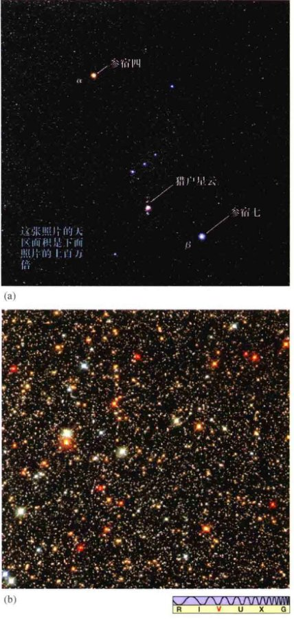
    <div class="caption">
        <strong>图17.8 恒星颜色</strong><br>
        (a) 不同颜色的恒星组成了猎户星座，它们很容易就能从这幅由小型望远镜上搭配的宽视场照相机所拍摄的照片中被分辨出来。左上方红色的亮星是参宿四 (α)，右下方蓝白色的恒星是参宿七 (β)。（与图1.8比较一下。）这幅照片的视场很大，大约为20°。(b) 在朝向银河系中心的方向上，难以置信地充满了多彩的恒星。这里的视场仅仅只有2'大——比(a)图的视场要小得多。[P. Sanz / Alamy图库 (Alamy)、美国国家航空航天局 (NASA)]
    </div>

    <p>由于我们对黑体曲线的基本形状了解充分，因此天文学家可以仅仅利用两个波长处的观测来估计恒星的温度（这非常幸运，因为暗星的精密光谱通常难以获得，并且非常耗时）。这一目标可以通过使用望远镜滤光片来屏蔽特定波长范围之外的所有辐射来达到。例如，B（蓝色）滤光片屏蔽了除紫色到蓝色光这一范围之外的其他所有辐射。国际标准定义是从380~480nm，这一范围对应于照相底片最敏感的波长范围。类似地，V（可见光）滤光片只能让波长在490~590nm（绿色到黄色）内的辐射通过，对应于人眼尤为敏感的光谱范围。许多其他的滤光片在日常中也用到——U（紫外）滤光片覆盖近紫外范围，红外滤光片覆盖光谱的长波范围。</p>

    <p>图17.9说明，B和V滤光片准许不同温度的天体辐射透过的光量不同。曲线 (a) 对应于非常炽热的、温度为30,000K的辐射源，透过B滤光片的辐射比透过V滤光片的辐射要多得多（大约30%以上），因此该天体在B滤光片中看起来要比V滤光片亮。曲线 (b) 对应的温度为10,000K，通过B和V滤光片的流量大致相等。对于较冷的3000K的曲线 (c)，V滤光片范围内接收到的能量比B滤光片的多大约5倍，因此，V滤光片得到的图像比B滤光片得到的图像强得多。在每种情况下，仅仅基于这两个测量结果，都可能重现整个黑体曲线，因为没有其他的黑体曲线都能通过这两个测量点。在某些程度上，恒星的光谱可以用黑体谱来很好地近似，B和V的流量测量足以给出恒星的黑体曲线，从而能导出恒星的表面温度。</p>

    <!-- Page 10 -->
    
    <div class="caption">
        <strong>图17.9 黑体曲线</strong><br>
        恒星(a)是一颗非常炽热的——30,000K的恒星，因此它通过B（蓝色）滤光片的流量比通过V（可见光）滤光片的流量强度大（这实际对应于图17.8a中参宿七的情况）。恒星(b)的B和V测量值大致相等，因此它看起来发白，温度大约为10,000K。恒星(c)的颜色偏红；它的V波段强度比B波段的值要大得多，温度为3000K（如图17.8a中所示的参宿四）。
    </div>

    <p>因此，天文学家可以简单地通过测量和比较透过不同颜色的滤光片所接收到的光来估计恒星的温度。正如第4章里所讨论的，这种利用标准的滤光片组进行的非谱线分析被称为<strong>测光</strong>。(4.3节) 表17.1中列出了使用测光方法得出的几颗著名的亮星的表面温度，以及没有滤光片时恒星呈现出的颜色。</p>

    <table border="1">
        <caption>表17.1 恒星颜色和温度</caption>
        <tr>
            <th>表面温度/K</th>
            <th>颜色</th>
            <th>常见例子</th>
        </tr>
        <tr>
            <td>30 000</td>
            <td>蓝-紫</td>
            <td>参宿三（猎户座德尔塔）</td>
        </tr>
        <tr>
            <td>20 000</td>
            <td>蓝</td>
            <td>参宿七</td>
        </tr>
        <tr>
            <td>10 000</td>
            <td>白</td>
            <td>织女星，天狼星</td>
        </tr>
        <tr>
            <td>7000</td>
            <td>黄-白</td>
            <td>老人星</td>
        </tr>
        <tr>
            <td>6000</td>
            <td>黄</td>
            <td>太阳，南门二</td>
        </tr>
        <tr>
            <td>4000</td>
            <td>橙</td>
            <td>大角星，毕宿五</td>
        </tr>
        <tr>
            <td>3000</td>
            <td>红</td>
            <td>参宿四，巴纳德星</td>
        </tr>
    </table>

    <h3>恒星光谱</h3>
    <p>颜色是对恒星有效的描述方式，但天文学家常常会结合从光谱观测中获得的额外恒星物理信息，使用一种更加复杂的策略来对恒星属性进行分类。图17.10比较了几颗不同恒星的光谱，按表面温度从高到低排列（温度由颜色测量所确定）。所有光谱的范围从400~650nm，每条光谱都显示了叠加在连续颜色变化背景之上的一系列暗黑的吸收线，就像太阳光谱那样。(5.3节) 然而，这些精确的谱线图案揭示了许多不同点。一些恒星在长波范围内有很强的吸收线（图的左边）。其他恒星在短波范围内有很强的吸收线（图的右边）。还有一些恒星的强吸收线覆盖了整个可见光谱的范围。这些不同点告诉了我们什么呢？</p>
    
    <p>尽管许多元素的谱线展示出广泛的强度变化，但图17.10中光谱的区别并不在于成分的不同。</p>

    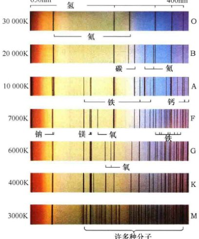
    <div class="caption">
        <strong>图17.10 恒星光谱</strong><br>
        七种表面温度范围不同的恒星的观测光谱比较。这些不是混乱和复杂的实际光谱，而是经艺术家简化后突出说明重要谱线特征的光谱。顶端是最炽热恒星的光谱，显示出氦线和多种重元素电离后的谱线。底端是最冷恒星的谱线，缺少氦线，但有丰富的中性原子和分子谱线。温度介于其间的恒星，氢的谱线是最强的。
    </div>

    <!-- Page 11 -->
    <aside class="detailed-explanation">
        <h3>详细说明 6-1 星等标度的更多知识</h3>
        <p>让我们依据星等来重新讨论两个重要的话题——恒星光度和平方反比律。</p>
        <p>绝对星等相当于恒星的光度——恒星的内禀属性。给定太阳的绝对星等为4.83以后（见附录3，表6），我们可以根据这两个量建立一个转换表（如下所示）。由于亮度增加100倍对应于星等减少5个单位，那么光度是太阳光度100倍的恒星的绝对星等为 4.83 - 5 = -0.17，而光度为0.01太阳光度的恒星的绝对星等为 4.83 + 5 = 9.83。</p>
        <p>我们可以将其中的空白填满，因为已知1个星等对应于 $100^{1/5} \approx 2.512$ 倍的变化，2个星等对应于 $100^{2/5} \approx 6.310$ 的变化，以此类推。10倍亮度的变化对应于2.5个星等。你可以使用该表在太阳光度和绝对星等之间进行转换，应用到这一章和后面章节里的许多图片中去。</p>
        
        <p style="text-align: center;">$L$（太阳光度）$= 10^{-(M-4.83)/2.5}$</p>

        <p><strong>示例 1</strong><br>让我们计算绝对星等为 $M$（绝对星等的惯用符号，不要与质量混淆！）的恒星的光度（以太阳光度为单位）。这颗恒星的绝对星等与太阳的绝对星等相差 $(M - 4.83)$ 等，因此，根据刚给出的推导关系，恒星光度 $L$ 与太阳光度的差别为 $100^{-(M-4.83)/5}$，即 $10^{-(M-4.83)/2.5}$。因此我们可以写成上式。</p>
        
        <p>插入一些数字（从附录3的表5、6中可查），我们知道太阳的 $M=4.83$，显然有 $L=10^0=1$。天狼星A，$M=1.45$，因此光度为 $10^{1.35} = 22$ 太阳光度；巴纳德星，$M=13.24$，光度为 $10^{-3.35} = 4.3 \times 10^{-4}$ 太阳光度；参宿四，$M=-5.14$，光度为9700太阳光度，以此类推。</p>
        
        <p>将平方反比律加到这些公式中，记住恒星的距离增加10倍，它的视亮度会降低100倍（平方反比律），因此它的视星等增加5等；距离增加100倍，视星等增加10等，以此类推。距离每增加10倍，视星等都会增大5等。由于绝对星等无非是距离为10 pc的视星等，因此我们可以写为</p>
        
        <p style="text-align: center;">视星等 - 绝对星等 = $5 \log_{10} (\frac{\text{距离}}{10\text{秒差距}})$</p>
        
        <p>（其中的对数函数——可以用计算器上的LOG键计算——定义为如果 $a=\log_{10}(b)$，那么 $b=10^a$。）尽管该公式看起来不像平方反比公式，但它恰恰相当于文中所提到过的平方反比律！注意，对于距离地球超过10 pc的恒星，其视星等比其绝对星等大，而对于距离比10 pc近的恒星，情况相反。</p>

        <p><strong>示例 2</strong><br>太阳的绝对星等为4.83，从100 pc的距离上观看，它的视星等为 $4.83 + 5 \log_{10}(100/10) = 4.83 + 5(1) = 9.83$? 不，公式中是 $\log(100/10) = \log(10) = 1$。再检查一下，距离是100，除以10是10，log10是1，5*1=5，4.83+5=9.83。等一下，原文中的例子是 $4.83 + 5\log_{10}(100) = 14.83$，这意味着公式应该是 $5\log(D/10)$ 也就是 $5(\log D - 1) = 5\log D - 5$。或者公式是视星等-绝对星等 = $5 \log_{10}(\text{距离}) - 5$。我们用原文的数字：$5 \log_{10}(100) = 10$，那么 $4.83 + 10 = 14.83$。这远远低于双筒望远镜的观测能力。我们也可以用其来说明如何从恒星的绝对星等和视星等得到距离。恒星南门二（也叫作半人马座阿尔法星）的绝对星等是4.34等，观测到的视星等为-0.01。星等之间的差别为-4.35，因此它的距离一定是 $10 \text{ pc} \times 10^{-4.35/5} = 1.35 \text{ pc}$，与文中所给出的数值吻合（用视差得到的）。</p>
    </aside>

    <p>详细的谱线分析表明这七颗恒星有着类似的元素丰度——都与太阳丰度大致相当。(5.3节) 相反，正如在第3章里讨论过的，谱线差异几乎完全来自于恒星的温度。(3.5节) 图中顶端的光谱正好是一颗与太阳成分类似的、温度大约为30,000K的恒星所能产生的光谱，第二幅光谱我们可以预计来自于温度为20,000K的恒星，以此类推，直到底部温度为3000K的恒星。</p>

    <!-- Page 12 -->
    <p>图17.10中光谱的主要区别在于：</p>
    <ul>
        <li>表面温度超过25,000K的恒星光谱通常有着一次电离氦（即氦原子失去一个轨道电子）和多次电离的重元素的强吸收线，如氧、氮和硅（图中没有显示后者的吸收线）。较冷恒星的光谱中没有这些强吸收线，是因为只有非常炽热的恒星才能激发和电离这些紧密束缚的原子。</li>
        <li>相比之下，在非常炽热的恒星的光谱中，氢的吸收线相对较弱。原因并不是因为缺乏氢，氢是迄今为止所有恒星中最为丰富的元素。然而，在高温下，多数氢被电离，因此很少有完整的氢原子来产生强烈的谱线。</li>
        <li>表面温度居中的、大约为10,000K的恒星中氢的谱线最强。这一温度正好适合电子频繁地在氢的第二和更高轨道之间运动，从而产生特有的可见氢谱线。（详细说明3-1）束缚紧密的原子的谱线——例如，氦和氖的谱线——需要大量的能量才能被激发出来，因此在这些恒星的光谱中很少被观测到，而束缚较为松散的原子的谱线——比如钙原子和钛原子的谱线——在这些恒星的光谱中出现得相当普遍。</li>
        <li>在表面温度在4000K以下的恒星中，氢谱线同样暗弱，但这次是因为温度太低，不能将大量电子从基态中激发出来。(3.2节) 这些恒星中最强的谱线来源于弱激发的重原子；没有电离元素产生的谱线。最冷恒星的温度低至分子可以存在，许多观测到的吸收线来自于分子，而不是原子。(3.4节)</li>
    </ul>

    <p>恒星光谱是我们对恒星组分所有详细信息的来源，它们实际揭示了恒星之间组分的显著差异，特别是碳、氮、氧和重元素的丰度差异。然而，正如我们已经看到的那样，这些差异并不是观测到的谱线有所不同的主要原因。相反，决定一颗恒星光谱外观的主要因素是它的温度，恒星光谱是测量这些重要恒星性质的强大、精确的工具。</p>

    <h3>光谱分类</h3>

    <p>随着全世界的天文台积累天空两个半球的恒星光谱，在20世纪开始之前就已经获得了许多恒星类似于图17.10所示的那些恒星光谱。在1880年到1920年之间，通过将观测谱线与实验室中得到的谱线进行比对，研究人员准确地鉴别出了一些观测谱线。然而，研究人员无法深刻理解谱线是如何产生的。现代原子理论那时还没有得以发展，因此，对谱线强度的正确解释，如前所述，在当时是不可能的。</p>

    <p>缺乏对原子如何产生光谱的完整理解，早期对恒星的人工分类主要是依据它们的氢谱线强度。他们采用字母A, B, C, D, E......的策略，其中有最强氢谱线的A型恒星，被认为拥有比B型恒星更多的氢，其他依次类推。分类甚至扩展到了字母P。</p>

    <p>在20世纪20年代，科学家开始了解原子结构的错综复杂和谱线形成的原因。天文学家很快意识到，可以依据恒星的表面温度来进行更有意义的分类。然而，他们不是采用全新的策略，而是选择打乱已有的字母分类——那些基于氢谱线强度的分类——基于温度重新排序。在现代策略下，最炽热的恒星由O表示，因为它们的氢吸收线非常弱，在原来的策略下被分类到最后。按照温度降低的顺序，现在保留下的字母为O、B、A、F、G、K、M（其他的字母分类已经被丢弃了。）这些恒星类型被称为<strong>光谱型</strong>（或称光谱类型）。采用历史悠久的（但不合时宜的）记忆方法：“Oh, Be A Fine Girl, Kiss Me”，便可以按正确的顺序记住它们。</p>

    <p>天文学家进一步将每个字母光谱类型细分为10个子类，用数字0~9来表示。按照惯例，数字越小，恒星越炽热。例如，我们的太阳被归类为G2型恒星（比G1型恒星稍冷，比G3型恒星稍热），织女星是A0型星，巴纳德星是M5型，参宿四是M2型，等等。表17.2列举了表17.1中所提到的恒星所对应的每一种光谱型的主要性质。</p>

    <p>我们不应该低估早期恒星光谱分类工作的重要性。尽管最初的分类是基于错误的假设，但能够解释观测的理论一旦出现，辛辛苦苦积累下的大量准确数据就能迅速地铺平理解它们的道路。</p>

    <div class="concept-check">
        <h4>概念理解检查</h4>
        <p>❓ 为什么恒星的光谱类型取决于它的温度？</p>
    </div>

    <!-- Page 13 -->
    <table border="1">
        <caption>表17.2 恒星光谱型</caption>
        <tr>
            <th>光谱型</th>
            <th>表面温度/K</th>
            <th>显著吸收线</th>
            <th>常见例子</th>
        </tr>
        <tr>
            <td>O</td>
            <td>30 000</td>
            <td>强电离氦线；重元素的多次电离谱线；弱氢谱线</td>
            <td>参宿三 (O9)</td>
        </tr>
        <tr>
            <td>B</td>
            <td>20 000</td>
            <td>中等强度的中性氦线；重元素的一次电离谱线；中等强度的氢线</td>
            <td>参宿七 (B8)</td>
        </tr>
        <tr>
            <td>A</td>
            <td>10 000</td>
            <td>非常弱的中性氦线；重元素的一次电离谱线；强氢线</td>
            <td>织女星 (A0)，天狼星 (A1)</td>
        </tr>
        <tr>
            <td>F</td>
            <td>7000</td>
            <td>重元素的一次电离谱线；中性金属谱线；中等强度氢线</td>
            <td>老人星 (F0)</td>
        </tr>
        <tr>
            <td>G</td>
            <td>6000</td>
            <td>重元素的一次电离谱线；中性金属谱线；相对较弱的氢线</td>
            <td>太阳 (G2)，半人马座阿尔法星 (G2)</td>
        </tr>
        <tr>
            <td>K</td>
            <td>4000</td>
            <td>重元素的一次电离谱线；强中性金属线；弱氢线</td>
            <td>大角星 (K2)，毕宿五 (K5)</td>
        </tr>
        <tr>
            <td>M</td>
            <td>3000</td>
            <td>强中性原子谱线；中等强度的分子谱线；非常弱的氢线</td>
            <td>参宿四 (M2)，巴纳德星 (M5)</td>
        </tr>
    </table>

    <h2>17.4 恒星的大小</h2>
    <p>大多数恒星在天空中都是无法分辨的光点，即使使用最大的望远镜来观测。即便如此，天文学家也常常能十分精确地确定它们的大小。</p>

    <h3>直接和间接测量</h3>
    <p>有些恒星足够大、足够亮，距离也足够近，使得我们能够<strong>直接</strong>测量它们的大小。一个著名的例子就是明亮的红色恒星参宿四，猎户星座中最有名的成员（见图17.8）。如图17.11(a)所示，参宿四几乎大到在短波上能够被哈勃太空望远镜分辨出来。逐步改善的干涉测量方法和自适应光学技术帮助天文学家构建了少量分辨率非常高的恒星图像。一些图像显示的细节足以展现一些表面特征，如图17.11(b)所示的同样的参宿四。(见4.4节、4.6节)</p>

    <p>一旦能够测量恒星的角大小，如果它的距离也已知，那么我们就可以利用简单的几何方法确定它的半径。(1.6节) 例如，距离130 pc、角直径可达0.045"的参宿四，它的最大半径是太阳的630倍。（我们这里说“最大半径”是因为参宿四碰巧是一颗变星——它的半径和光度有着不太规则的变化，周期大约为6年。）总之，可能有几十颗恒星的大小已经采用这种方法测量得到了。</p>

    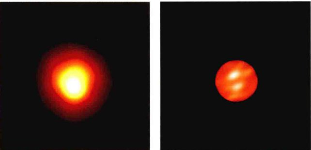
    <div class="caption">
        <strong>图17.11 参宿四</strong><br>
        膨胀的参宿四（这里以伪彩色显示）距离我们足够近，可以直接得到它的大小，以及一些表面特征，它们被认为类似于太阳上发生的风暴。(a) 参宿四的紫外图像，由哈勃空间望远镜上装载的欧洲照相机所拍摄，几乎能分辨出这颗巨大的恒星。(b) 由亚利桑那州的三台望远镜干涉测量得到的红外图像，更好地显示了参宿四，以及它表面上的两个斑点。[欧洲航天局 (ESA) / 美国国家航空航天局 (NASA)、史密松天体物理观测台 (SAO)]
    </div>

    <p>大多数恒星的距离都太遥远或是太小，而无法采用这样的直接测量方法。相反，它们的大小必须通过间接的方法——利用辐射定律推断出来。(2.4节) 恒星发出的辐射由斯特藩—玻耳兹曼定律所决定，即恒星表面单位面积在单位时间内辐射的能量与恒星表面温度的四次方成正比。（详细说明 2-2）为了确定恒星的光度，我们必须乘以它的表面积——同一温度下，个头大的天体所辐射的能量比个头小的天体所辐射的能量多。由于表面积正比于半径的平方，于是有</p>

    <p style="text-align: center; font-weight: bold;">光度 ∝ 半径<sup>2</sup> × 温度<sup>4</sup></p>

    <!-- Page 14 -->
    <aside class="detailed-explanation">
        <h3>详细说明 6-2 估计恒星的半径</h3>
        <p>我们可以结合斯特藩-玻耳兹曼定律 $F=\sigma T^4$ 和球体面积公式 $A=4\pi R^2$，从而得到正文中所描述的有关恒星半径 (R)、光度 (L) 和温度 (T) 之间的关系：</p>
        <p style="text-align: center;">$L = 4\pi R^2 \sigma T^4$</p>
        <p>或</p>
        <p style="text-align: center;">光度 ∝ 半径<sup>2</sup> × 温度<sup>4</sup></p>
        
        <p>如果我们便捷一点，使用“太阳”的单位，$L$ 用太阳光度 ($3.9 \times 10^{26}$W) 表示，$R$ 以太阳半径 (696,000 km) 表示，$T$ 以太阳的温度 (5800 K) 表示，那么我们可以消除常数 $4\pi\sigma$，将公式写成</p>
        <p style="text-align: center;">$L (\text{太阳光度}) = R^2 (\text{太阳半径}) \times T^4 (\text{以5800 K为单位})$</p>
        
        <p>为了利用恒星的光度和温度来计算恒星的半径，我们重新改写公式如下（单位同上）</p>
        <p style="text-align: center;">$R = \sqrt{L} / T^2$</p>
        
        <p>这一辐射定律的简单应用几乎是本书中所有恒星大小估计的基础。让我们通过计算书中所讨论的两颗恒星的半径来说明这一过程。</p>
        
        <p><strong>示例</strong><br>按照上面定义的太阳单位，恒星毕宿五的光度为 $L=1.3 \times 10^{29}\text{W}/3.9 \times 10^{26}\text{W}=330$单位，温度为 $=4000\text{K}/5800\text{K}=0.69$单位。因此，根据公式，它的半径为 $R=\sqrt{330}/0.69^2 = 18/0.48 \text{单位} = 38$ 太阳半径——因此毕宿五是一颗巨星。另一个极端的例子，南河三B的光度 $L=2.3 \times 10^{23}\text{W}/3.9 \times 10^{26}\text{W}=0.0006$单位，温度 $T=8500\text{K}/5800=1.5$单位，因此它的半径是 $R=\sqrt{0.0006}/1.5^2 = 0.01$ 太阳半径——南河三B是一颗矮星。</p>
    </aside>

    <p>这一<strong>半径-光度-温度关系</strong>很重要，因为它表明已知恒星的光度和温度，如此便可以推导并估计恒星的半径——一种<strong>间接</strong>确定恒星大小的方法。</p>

    <h3>巨星和矮星</h3>
    <p>让我们举几个例子来说明这一区分。恒星毕宿五（金牛星座中橙红色的“公牛之眼”）的表面温度大约为4000K，光度为 $1.3 \times 10^{29}$W。因此，用太阳的对应值来表示的话，毕宿五的温度是太阳温度的70%，光度约为330倍太阳光度。那么半径-光度-温度关系（见详细说明6-2）说明该恒星的半径差不多是40倍太阳半径。如果我们的太阳有这么大的话，它的光球层将扩展到水星轨道，从地球上看，太阳在天空中将覆盖超过20°。像毕宿五这样大的恒星被称为<strong>巨星</strong>。更准确地说，巨星是半径为10~100倍太阳半径的恒星。由于4000K的天体颜色看起来偏红，因此毕宿五是一颗<strong>红巨星</strong>。更大的、半径超过1000个太阳半径的恒星被称为<strong>超巨星</strong>。参宿四就是红超巨星的一个典型例子。</p>

    <!-- Page 15 -->
    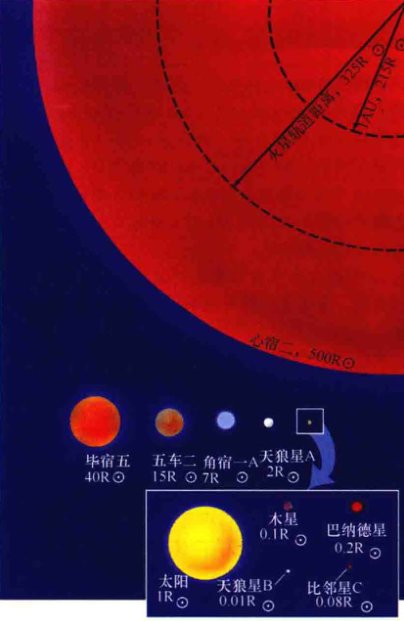
    <div class="caption">
        <strong>图17.12 恒星的大小</strong><br>
        这里列出了几颗不同大小的著名恒星。红巨星心宿二只有一部分显示在此尺度内，而超巨星参宿四会填满整页纸。（这里和其他页中的符号“⊙”表示的是太阳，符号“R⊙”意为“太阳半径”。）
    </div>

    <p>现在我们来看南河三B，它是南河三A的暗弱伴星，也是夜空中最亮的恒星之一（见附录3表5）。南河三B的表面温度大约是8500K，差不多是太阳温度的1.5倍。该恒星的光度是 $2.3 \times 10^{25}$W，约为太阳光度的万分之六。再次利用半径-光度-温度关系，我们得到的半径是太阳半径的1%——比地球半径稍稍大一些。相比太阳，南河三B是一颗炽热的、尺寸较小、光度小得多的恒星。这样的恒星被称为<strong>矮星</strong>。天文学中，术语矮星指的是一切半径与太阳相当或者更小的恒星（包括太阳自己）。由于8500K的天体看起来发白——因此炽热的南河三B是<strong>白矮星</strong>的一个例子。</p>

    <p>绝大多数恒星的半径（主要是利用半径-光度-温度关系计算得到）范围从小于太阳半径的1%到超过100倍太阳半径。图17.12展示了几颗著名的恒星估计的半径大小。</p>

    <div class="concept-check">
        <h4>概念理解检查</h4>
        <p>❓ 我们可以测量一颗恒星的半径而不需要知道恒星到地球的距离吗？</p>
    </div>

    <h2>17.5 赫罗图</h2>

    <p>天文学家使用光度和表面温度来进行恒星分类，就像使用身高和体重来区分人类体征那样。我们知道人的身高和体重是紧密相关的：个子高的人一般体重比个子矮的人重。自然地，我们可能也想知道这两种恒星的基本属性是否也以某种方式相关。</p>

    <p>图17.13给出了几颗著名恒星的光度与温度关系图。这种形式的图被称为<strong>赫茨普龙-罗素图</strong>，简称<strong>赫罗图</strong>，以丹麦天文学家埃希纳·赫茨普龙和美国天文学家亨利·诺里斯·罗素命名，他们各自独立地在20世纪20年代开创性地使用了这种图。纵坐标，以太阳光度为单位表示（$3.9 \times 10^{26}$W），覆盖了很大的范围，从 $10^{-4}$ 到 $10^4$。太阳正好出现在光度范围的中间位置，光度为1。横坐标表示的是表面温度，和传统的温度从左到右增加的表示方法不同，温度从右到左是增加（因此光谱型序列O, B, A, F, G, K, M，从左到右表示）。将水平刻度改为传统的温度从左到右增加，将与历史先例不同，从而造成混乱。</p>
    
    <p>正如我们刚了解过的，天文学家常常使用恒星的颜色来表示它的温度。但事实上，图17.13中沿着水平轴画出的光谱型相当于B-V颜色指数。另外，由于天文学家通常用绝对星等来表示恒星的光度，用恒星星等来代替恒星光度，因此也可以作为此图的纵坐标轴（见详细说明6-1）。许多天文学家更愿意将他们的数据用这样更有“观测性”的方式来表示，这时对应于图17.13的图被称为<strong>颜色-星等图</strong>。本书中，我们将用更“理论化”的量——温度和光度来进行讨论，但是请大家要认识到，在许多工作中，颜色-星等图和赫罗图其实表示的是同一种意思。</p>

    <!-- Page 16 -->
    
    <div class="caption">
        <strong>互动图17.13 著名恒星的赫罗图</strong><br>
        光度与表面温度（或光谱型）的比较图是比较恒星的有效手段。这里画出了文中提到过的一些恒星的数据。太阳，光度为1个太阳单位，温度为5800K，是一颗G型恒星。B型恒星参宿七位于左上端，温度约为11,000K，光度超过太阳光度的10,000倍。M型恒星比邻星，位于右下端，温度约为3000K，光度不超过太阳光度的万分之一。
    </div>

    <h3>主序</h3>
    <p>图17.13中标出的不太多的恒星并没有给出任何有关恒星性质之间的特定联系。然而，随着赫茨普龙和罗素在图中绘制出越来越多恒星的温度和光度，他们发现事实上存在着这样一种关系：恒星并不是均匀分布在赫罗图上的；相反，大部分恒星被限制在一个相当明确的带状区域内，从左上顶端（高温、高光度区）沿对角伸展到右下底部（低温、低光度区）。换句话说，温度低的恒星往往较暗（低光度），而炽热的恒星往往较明亮（光度更高）。这样一条跨越赫罗图的恒星带被称为<strong>主序</strong>。</p>

    
    <div class="caption">
        <strong>互动图17.14 近邻恒星的赫罗图</strong><br>
        大多数恒星位于赫罗图上被称为主序的长而狭窄的阴影部分区域中。这里画出的恒星距离太阳不超过5 pc。每条沿对角的虚线对应的恒星半径为常数。（符号“R⊙”表示的是“太阳半径”。）
    </div>

    <p>图17.14包含约80颗距离太阳在5 pc以内的恒星，显示出对恒星性质更为系统的研究。随着图中包含的点越来越多，主序逐渐被“填满”，主序的图像变得更加清晰。绝大多数太阳邻近区域内的恒星都位于主序位置。</p>
    
    <p>主序星的表面温度范围从3000K左右（M光谱型）到30,000K以上（O光谱型）。这样相对较小的温度范围——只有10倍的变化——主要是由恒星内核发生的核反应速率所决定的。(5.6节) 相比之下，观测到的光度变化范围非常之大，覆盖了大概8个数量级（即一亿倍的变化），从 $10^{-4}$ 太阳光度到 $10^4$ 太阳光度。</p>

    <p>利用半径-光度-温度关系(17.4节)，天文学家发现，恒星半径也沿主序在变化。赫罗图右边底端的暗弱红色M型恒星大约只有太阳半径的十分之一大，而左边顶部明亮的蓝色O型恒星大约比太阳大10倍。图17.14中的倾斜虚线标出的恒星半径不变，意味着任何位于给定虚线上的恒星都有着相同的半径，不管它的光度或温度是多少。沿着恒定的半径虚线，半径-光度-温度关系意味着</p>
    <p style="text-align: center;">光度 ∝ 温度<sup>4</sup></p>
    <p>通过在赫罗图中加入这样的虚线，我们可以在单独的一幅图上显示恒星的温度、光度以及半径。</p>
    
    <p>沿着主序从上到下，我们能发现一个非常清晰的变化趋势。在左上端，恒星很大、很热、很亮。鉴于它们的大小和颜色，它们被称为<strong>蓝巨星</strong>。最大的是<strong>蓝超巨星</strong>。在右下端，恒星很小、很冷、很暗，它们被称为<strong>红矮星</strong>。我们的太阳正好位于中间。</p>

    <!-- Page 17 -->
    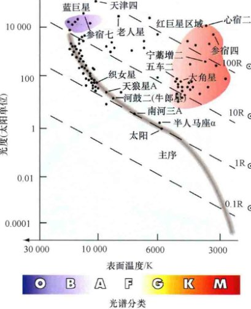
    <div class="caption">
        <strong>图17.15 最亮恒星的赫罗图</strong><br>
        天空中最亮的100颗恒星的赫罗图，它们一般都是光度最大的恒星——如那些出现在左上部的恒星——因为我们看到它们要比看到最暗弱的恒星容易得多。（图17.14则只显示了最近的恒星。）
    </div>

    <p>图17.15展示了不同组群恒星的赫罗图——从地球上看，100颗已知距离的恒星有着最亮的视亮度。注意，更多光度极大的恒星位于主序的上端，而不是下端。图中蓝巨星更多的原因很简单：我们在很远的距离上只能看见光度非常大的恒星。这幅图显示的恒星散布的空间范围比图17.14中显示的那些恒星要宽广得多，但它们几乎都偏向光度较大的那边。事实上，天空中最亮的20颗恒星中，只有6颗距离我们在10 pc以内；尽管剩下的恒星很遥远，但由于它们的光度很大，因此也能被看到。</p>

    <p>图17.15中，如果非常明亮的蓝巨星所占比例被高估了的话，那么低光度的红矮星数量无疑被低估了。实际上，图中没有显示任何矮星。这样的缺失并不奇怪，因为从地球上很难观测到低光度的恒星。在20世纪70年代，天文学家开始意识到他们大大低估了银河系中红矮星的数量。图17.14展示了太阳邻近区域内一组不偏不倚的恒星样本，如其中赫罗图显示的那样，红矮星实际是天空中最为常见的恒星。事实上，它们可能占宇宙中所有恒星数量的80%以上。相比之下，O型和B型超巨星极其罕见，10,000颗恒星中大约只有1颗属于这些类型。</p>

    <h3>白矮星和红巨星</h3>
    <p>大多数恒星位于主序段。然而，图17.13到图17.15的图中显然有一些点没有在主序位置。如图17.13所示，其中一个像这样的点是南河三B，它是一颗前面讨论过的白矮星(17.4节)，表面温度为8500K，光度约为太阳光度的万分之六。图17.14中还可见更多这样暗弱但炽热的恒星，位于赫罗图的左下角。这一区域被称为<strong>白矮星支</strong>，在图17.14中被标示出来。</p>
    
    <p>图17.13中也显示了毕宿五（见17.4节的讨论），它的表面温度为4000K，但光度为太阳光度的300倍左右。另外一颗星是参宿四（猎户座阿尔法星），它是天空中第九亮的恒星，温度比毕宿五稍低，但要亮100倍以上。这些恒星位于赫罗图的右上角（见图17.15），该区域被称为<strong>红巨星支</strong>。太阳附近的5 pc内没有发现任何红巨星（见图17.14），但天空中可见的许多最亮的恒星实际上是红巨星（见图17.15）。尽管它们的数量相当稀少，但红巨星却非常明亮，因此在很远的距离外也能被看见。它们组成了赫罗图中完全不同的第三类恒星，与主序星和白矮星的性质截然不同。</p>

    <p>依巴谷项目(17.1节)除了用前所未有的精度确定了数十万颗恒星的视差外，也测量得到了超过200万颗恒星的颜色和光度。图17.16展示了基于海量依巴谷数据的很少一部分所作的赫罗图。主序和红巨星支清晰可见。然而，只有很少的白矮星可见，这仅仅是因为依巴谷的望远镜只能观测相对较亮的天体——视星等亮于12等的天体。几乎没有白矮星距离地球足够近，因此它们的视星等都在此极限之外。</p>

    <p>太阳附近的恒星大约有90%是主序星，可能宇宙中其他地方的恒星也有约90%是主序星。大约有9%的恒星是白矮星，而有1%的恒星是红巨星。</p>

    <!-- Page 18 -->
    
    <div class="caption">
        <strong>图17.16 依巴谷的赫罗图</strong><br>
        这幅有史以来最完整的赫罗图之一的简化版本包含超过20,000个数据点，由欧洲依巴谷飞船测量得到的距离太阳在几百秒差距内的恒星组成。
    </div>

    <div class="concept-check">
        <h4>概念理解检查</h4>
        <p>❓ 只有一小部分的恒星是巨星。那么，为什么夜空中最亮的恒星有许多都是巨星？</p>
    </div>

    <h2>17.6 延伸到宇宙距离尺度</h2>

    <p>我们已经讨论了光度、视亮度和距离之间的联系。有关恒星视亮度和距离的知识使得我们能够利用平方反比律来确定恒星的光度。但我们也能将问题反过来考虑。如果我们大致知道一颗恒星的光度，然后测量得到它的视亮度，那么我们就可以利用平方反比律知道它到太阳的距离。</p>

    <h3>分光视差</h3>
    <p>我们大多数人对标准红绿灯的固有亮度（即光度）都有粗略的认识。假设你在一条不熟悉的街道上驾驶，远远地看到红灯出现。你对红灯光度的了解使得你立即就能在心底估计出它的距离。看起来相当暗淡的红灯（低视亮度）一定十分遥远（假设红灯并不脏的话）。看起来很亮的红灯一定相当近。因此，测量一个光源的视亮度，并结合它本身光度的相关信息，可以用于估计光源的距离。</p>
    
    <p>对恒星来说，诀窍在于找到不需要知道距离就能测量光度的独立手段。赫罗图就可以提供这样的方法。例如，假设我们观测一颗恒星并且得到它的视星等为10等。就此数字本身来说，并没有告诉我们太多的东西——这颗恒星可能距离近但暗弱，也可能距离远但明亮（见图17.6）。但假设我们有一些额外的信息：该恒星位于主序并且光谱型为A0，那么我们就可以从图17.15中读出恒星的光度。一颗主序A0恒星的光度大约为100个太阳单位。根据详细说明6-1，对应的绝对星等为0等，因此恒星的距离为1000 pc。</p>

    <p>这一利用恒星的光谱型来推断距离的过程被称为<strong>分光视差法</strong>。关键步骤在于以下：</p>
    <ol>
        <li>我们测量恒星的视亮度和光谱型，并不需要知道它的距离有多远。</li>
        <li>然后我们利用光谱型来估计恒星的光度。</li>
        <li>最后，我们应用平方反比律来确定恒星的距离。</li>
    </ol>
    
    <p>主序的存在使得我们能把容易测量的量（光谱型）和恒星的光度联系起来，而光度可能是未知的。术语分光视差指的是利用恒星光谱型来推断光度并由此得到距离的特殊过程。然而，正如在接下来的章节中会看到的那样，天文学不断地使用这一基本的逻辑（利用各种不同的手段来替代第2步）来作为距离测量手段。在实践中，主序的“模糊性”给距离测量带来了一定的不确定性 (10%~20%)，但基本的想法仍然是有效的。</p>

    <p>在《今日天文——太阳系和地外生命探索》中，我们介绍了最终会将我们带到可观测宇宙边缘的距离测量手段的第一级“阶梯”就是内行星的雷达测量，它确立了太阳系的大小并定义了天文单位。在17.1节中，我们讨论了宇宙距离阶梯的第二级——恒星视差——它以第一级阶梯的雷达测量为基础，因为它以地球轨道为基线。我们已经利用前两级阶梯确定了许多近邻恒星的距离和其他物理性质，现在我们可以使用这些知识来构建阶梯的第三级——分光视差。正如图17.17中简要所示，这一新的阶梯把我们对宇宙的视野带入更深的太空。</p>

    <p style="font-size: 0.9em; font-style: italic;">注：这一令人混淆的名字非常误导人，因为这一方法与恒星视差（几何）毫无共同之处，仅仅是因为它被用作距离测量手段。</p>

    <!-- Page 19 -->
    
    <div class="caption">
        <strong>图17.17 恒星的距离</strong><br>
        对恒星光度和视亮度的了解可以用于距离的估计。天文学家使用这一被称为分光视差的第三级距离阶梯，可以测量得到无法清晰分辨的恒星的距离——远至几千秒差距。
    </div>

    <p>分光视差可以用于确定几千秒差距之外的恒星距离。在此距离之外，很难得到单颗恒星的光谱和颜色。“标准”的主序可以利用恒星的赫罗图得到，而这些恒星的距离可以利用（几何）视差得到，因此可以利用近邻恒星来对分光视差方法做定标。注意，在使用这种方法时，我们假定（没有经过证明）遥远恒星从根本上类似于近邻恒星，它们所处的主序同近邻恒星的主序一样。只有通过这样的假设，我们才能够扩展距离测量手段的边界。</p>

    <p>当然，赫罗图中的主序并不是一条线，它有宽度。例如，光谱型被分为A0型的主序恒星（如织女星）的光度实际上覆盖了从30到100个太阳光度的范围。这一变化范围的主要原因在于，银河系中不同位置处恒星的成分和年龄不同。因此，采用这样的方法得到的光度有着相当大的不确定性，因此得出的恒星距离也有相当大的不确定性。利用分光视差得到的距离，通常精度大约不超过25%。</p>

    <p>最后，要记住这一点，由于距离阶梯的每一级都是利用前一级阶梯的数据来进行定标的，因此，任何一级阶梯的改变都会影响所有更大尺度的测量结果。因此，新的高质量观测的影响，如依巴谷项目造成的影响(17.1节)，都将远远地超出我们实际已经探寻过的空间。通过重新定标宇宙距离尺度的本地基础，依巴谷卫星让天文学家修订了他们做出的所有尺度的距离估计——超过并包括宇宙尺度本身。本书中所有引用的距离值都是基于依巴谷数据的改进值。</p>

    <h3>光度型</h3>
    <p>如果正在研究的恒星恰好是红巨星或白矮星，并且不在主序内，那会发生什么呢？回想一下第3章里对谱线宽度的详细分析，这能够提供谱线形成处的气体密度信息。(3.5节) 红巨星的大气比主序星的大气要稀薄得多，而主序星的大气要比白矮星的大气稀薄得多。图17.18(b)和图17.18(c)说明了同一光谱型的主序星和红巨星的光谱区别。</p>
    
    <p>多年来，天文学家发展出一套系统来根据谱线宽度对恒星进行分类。由于谱线宽度取决于恒星大气的密度，而密度又与光度密切相关，因此这一恒星属性被称为<strong>光度型</strong>。标准的光度型分类在表17.3中列出，并且展示在图17.18(a)的赫罗图中。通过确定恒星的光度型，天文学家通常可以非常确定地判断该天体属于哪一类。根据完全通过光谱方法测量得到的恒星属性，我们现在可以有办法具体说明恒星在赫罗图中的位置，就像温度和光度那样，光谱型和光度型也将恒星限定在赫罗图的确定位置上。一颗恒星光谱性质的完整参数包括它的光度型。例如，太阳这颗G2型主序恒星，完整光谱型为G2V型；B8型的蓝超巨星参宿七是B8Ia型；红矮星巴纳德星是M5V型；红超巨星参宿四是M2Ia，等等。</p>

    <table border="1">
        <caption>表17.3 恒星光度型</caption>
        <tr>
            <th>类型</th>
            <th>描述</th>
        </tr>
        <tr>
            <td>Ia</td>
            <td>亮超巨星</td>
        </tr>
        <tr>
            <td>Ib</td>
            <td>超巨星</td>
        </tr>
        <tr>
            <td>II</td>
            <td>亮巨星</td>
        </tr>
        <tr>
            <td>III</td>
            <td>巨星</td>
        </tr>
        <tr>
            <td>IV</td>
            <td>亚巨星</td>
        </tr>
        <tr>
            <td>V</td>
            <td>主序星和矮星</td>
        </tr>
    </table>

    <!-- Page 20 -->
    
    <div class="caption">
        <strong>图17.18 光度型</strong><br>
        (a) 赫罗图中标准恒星光度型分类的近似位置。吸收线的宽度也提供了有关恒星大气宽度的信息。主序KV型恒星的致密大气有着较宽的谱线(c)，比同一光谱型的巨星(b)的谱线宽。
    </div>

    <p>例如，考虑一颗表面温度近似为4500K的K2型恒星（表17.4）。如果恒星的谱线宽度告诉我们它处于主序（即它是颗K2V型恒星）阶段，那么它的光度大约是太阳光度的30%。如果观测到的恒星谱线比主序中正常的谱线要窄，那么这颗恒星可能会被归为K2III型巨星，光度为太阳光度的100倍 [见图17.18(a)]。如果谱线非常狭窄，那么这颗恒星可能会被分类为K2Ib型超巨星，要更亮40倍，即4000倍太阳光度。每个例子中，有关光度型的信息让天文学家能够鉴别天体类型，并且对其光度做出恰当的估计，从而得到它的距离。</p>

    <div class="concept-check">
        <h4>概念理解检查</h4>
        <p>❓ 假设天文学家发现，由于标定误差，所有利用几何视差方法测得的距离比目前认为的都大10%。这一发现对分光视差中所采用的“标准”主序有何影响？</p>
    </div>

    <table border="1">
        <caption>表17.4 同一光谱型恒星性质的变化</caption>
        <tr>
            <th>表面温度/K</th>
            <th>光度/太阳光度</th>
            <th>半径/太阳半径</th>
            <th>天体类型</th>
            <th>例子</th>
        </tr>
        <tr>
            <td>4009</td>
            <td>0.3</td>
            <td>0.8</td>
            <td>K2V 主序星</td>
            <td>波江座 ε</td>
        </tr>
        <tr>
            <td>4500</td>
            <td>110</td>
            <td>21</td>
            <td>K2III 红巨星</td>
            <td>大角星</td>
        </tr>
        <tr>
            <td>4300</td>
            <td>4000</td>
            <td>140</td>
            <td>K2Ib 红超巨星</td>
            <td>飞马座 ε</td>
        </tr>
    </table>

    <!-- Page 21 -->
    <h2>17.7 恒星质量</h2>
    <p>是什么最终确定了恒星在主序上的位置？答案是恒星的质量及其成分。质量和成分是任一恒星的基本属性。它们一起唯一地确定了恒星的内部结构、恒星的外貌，甚至是恒星未来的演化（我们将在第9章里看到）。如果我们想理解恒星是如何工作的，那么测量恒星的这两种关键属性是极其重要的。我们已经知道如何利用光谱来确定成分。(5.3节) 现在让我们来探讨确定恒星质量的问题。</p>

    <p>和其他所有天体一样，我们通过观测恒星对其附近天体——另外的恒星或可能是一颗行星——的引力作用来测量它的质量。如果我们知道两个天体之间的距离，那么我们就可以利用牛顿定律来计算它们的质量。目前，对最近发现的系外行星系统的研究仍然不足，不能提供独立的恒星质量测量，而且距离我们发射飞船围绕其他恒星运行还有很长的路要走。尽管这样，仍然有办法确定恒星的质量。</p>

    <h3>双星</h3>
    <p>大部分恒星是两颗或两颗以上的恒星互相绕转组成的多星系统的成员。多数恒星是<strong>双星系统</strong>，由两颗绕其共同质心运行的恒星构成，在它们相互的引力吸引下聚在一起。其他恒星可能是三星、四星，甚至是更复杂系统的成员。太阳不属于多星系统的一部分——如果太阳有什么不寻常的话，可能就是它缺少一颗伴星。</p>

    <p>天文学家根据从地球上看到的双星外貌和观测它们的难易程度，对双星系统（或简称为双星）进行了分类。<strong>目视双星</strong>的成员间隔较远，足够明亮，可以单独地进行观测和监控，如图17.19所示。最常见的是<strong>光谱分光双星</strong>，它们的距离很遥远，无法单独分辨它们的成员星，但在监测它们互相绕转时，谱线的前后多普勒位移能够间接地探测它们。记住，朝向观测者的运动会使谱线向电磁波谱的蓝端移动，而远离观测者的运动则会使谱线往红端移动。(2.5节) 在<strong>双谱分光双星</strong>中，可见两套有区分的谱线——每一套都对应于一颗恒星——随着恒星的运动发生前或后的位移。由于我们发现了特定谱线交替地发生蓝移和红移，因此我们能知道发出这些谱线的天体在绕轨道运行。在更常见的<strong>单谱分光双星</strong>系统中，如图17.20中所示的那些，其中一颗恒星太过暗弱，以至于它的光谱无法被分辨出来，因此只观测到一套谱线的红移和蓝移。谱线位移意味着观测到的恒星一定绕着另一颗恒星运动，即使这颗伴星无法被直接观测到。（如果这一观点听起来很耳熟的话，那么，所有当前被发现的系外行星系统都是单谱分光双星的极端例子。）</p>

    
    <div class="caption">
        <strong>图17.19 目视双星</strong><br>
        如果目视双星系统的每个成员都清晰可见的话，那么它的周期和间隔就可以直接观测得到。左图是双星克鲁格60的轨道示意图，右图是在指定年份所拍摄的实际照片。[哈佛大学天文台]
    </div>

    <p>更为少见的是<strong>交食双星</strong>，这对恒星的轨道平面几乎与我们的视线相平行。在这种情况下，如图17.21所示，随着一颗恒星从另一颗恒星前面通过（掠过），我们会观测到星光的周期性变暗。</p>

    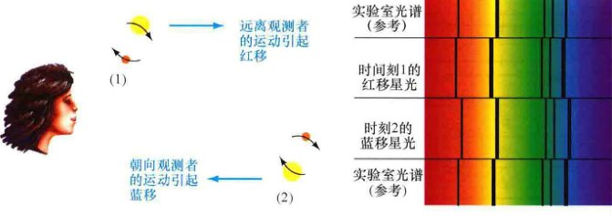
    <div class="caption">
        <strong>互动图17.20 分光双星</strong><br>
        通过测量在轨道运动中，其中一颗恒星相对于另一颗恒星发生的周期性的多普勒位移，可以确定双星的属性。这是一个单谱双星系统，只可见一条（来自较亮成员的）光谱。
    </div>

    <!-- Page 22 -->
    
    <div class="caption">
        <strong>互动图17.21 交食双星</strong><br>
        如果双星系统的两颗恒星发生互相掩食，那么通过观测一颗恒星从另一颗恒星前面经过时星光发生的周期性变暗现象，就可以获得有关它们半径和质量的额外信息。
    </div>

    <p>通过研究来自于双星系统的光的变化——双星的光变曲线——天文学家不仅可以详细地推断有关恒星轨道和质量的信息，还可以推断出它们的半径。因此，交食双星提供了测量恒星半径的另一类方法，与17.4节描述的直接或间接的方法都不同。</p>

    <p>例如，图17.21所示的序列中，最大的亮度（帧1, 3, 5）代表两颗恒星合并后的亮度，而较浅的低谷（帧4）代表的是较亮（较大）的那颗成员星的亮度。这两条线索使我们能够推断两颗恒星各自的亮度。较深低谷（帧2和6）的出现是因为暗弱一些的红色恒星部分地阻挡了来自于较亮的黄色恒星的光芒。亮度的变化显示出较亮的恒星被遮挡的比例，从而能够告诉我们两颗恒星的表面积比，因而能得到它们的半径之比（因为面积正比于半径的平方）。如果我们也知道成员星的轨道运动速度——从多普勒测量得到——那么低谷的宽度和从最小亮度到最大亮度所花的时间将告诉我们恒星实际的半径。</p>

    <p>上述双星系统的分类并不是互不相容的。例如，单谱分光双星也可以正好是一个交食系统。在这种情况下，天文学家可以利用交食来获得双星中较暗成员的额外信息。偶尔，两颗毫不相关的恒星在天空中的位置会正好重合，但实际上它们分隔得很远。这类<strong>光学双星</strong>只是机会性的重合，没有有关恒星质量的有用信息。</p>

    <h3>质量确定</h3>
    <p>通过观测双星的实际轨道、谱线的蓝移和红移或是光变曲线的凹陷——无论是用哪一种信息，天文学家都能测量得到双星的轨道周期。观测得到的周期大小从几小时到几个世纪都有。从中可以得到多少额外的信息取决于所研究的双星的类型。</p>

    <p>如果目视双星的距离已知，那么可以直接利用简单的几何来确定轨道的半长轴。利用修改后的开普勒第三定律来确定双星成员的总质量，那么双星的周期和轨道半长轴的大小就正是我们所必需的条件。由于两颗恒星的轨道可以被分别跟踪，因此确定每一颗恒星各自的质量也是可能的。回忆一下之前所讲的，在任何互相绕转的系统里，每个天体都绕共同的质心运动。测量目视双星系统中每颗恒星到质心的距离，可以得到恒星的质量比。知道了总质量和它们的比例，我们就能知道每颗恒星的质量。</p>

    <p>对分光双星来说，是不可能直接确定它们的半长轴的。多普勒位移测量可以告诉我们有关两颗恒星轨道速度的信息，但只是有关视向速度分量的信息——也就是沿着视线方向的速度。因此，我们无法确定轨道相对于我们视线方向的倾角，这限制了我们所能获得的信息量——简单地说，我们无法分辨是一颗轨道侧向我们的、运动缓慢的双星，还是一颗轨道几乎面向我们的（沿视线方向的轨道速度分量从而会很小）、运动快速的双星。在系外行星的研究中，我们就曾遇到过这样的局限性。</p>

    <p>对双谱分光双星来说，可以测得各自的视向速度，因此能够确定成员的质量比，但轨道倾角的不确定性意味着只能获得成员个体质量的下限。对单谱分光双星来说，可供使用的信息更少，只能推导出成员质量之间相当复杂的关系（即质量函数）。然而，如果能够利用其他手段来确定较亮的那颗恒星的质量（如果那颗亮星是一颗光谱型确定的主序星，如图17.22所示），往往这也是常有的情况，那么就可以得到另外那颗较暗的、不可见的恒星的质量下限。</p>

    <p>最后，如果一颗光谱双星正好也是一个交食系统，那么轨道倾角的不确定性就没有了，由此可知双星轨道是平着侧向我们，或是几乎如此。在这种情况下，双谱分光双星两个成员的质量都能够被确定。对于单谱分光双星，如果较亮的那颗恒星的质量能够利用其他手段确定（比如，通过认定它是一颗已知光谱型的主序星），那么质量函数也可得以简化，从而知道不可见的那颗恒星的质量。</p>

    <p>尽管存在这些限定条件和困难，我们也已经得到了许多近邻双星系统中成员星各自的质量。详细说明6-3列举了一个简单的例子，说明了在实践中如何实现这一目标。</p>

    <!-- Page 23 -->
    <h2>17.8 质量和其他恒星属性</h2>
    
    <p>我们将结束对恒星的介绍，现在来简要看看质量如何与本章中讨论过的恒星的其他属性相联系。图17.22是一幅简略的赫罗图，说明了恒星质量如何沿着主序变化。从低质量的红矮星到大质量的蓝巨星，都有着明确的连续性。除了少数例外，主序星的质量范围从太阳质量的10%到20倍太阳质量。炽热的O型和B型恒星的质量一般是太阳质量的10~20倍。最冷的K型和M型恒星则仅仅是太阳质量的几十分之一。恒星在自身形成时的质量确定了其在主序上的位置。基于太阳附近几百个光年内观测到的恒星，图17.23说明了主序星的质量大小是如何分布的。注意，低质量恒星的占比非常高，而质量为几倍太阳质量的恒星的占比非常微小。</p>

    
    <div class="caption">
        <strong>图17.22 恒星质量</strong><br>
        比起任何其他的恒星属性，质量更能够确定一颗恒星在主序上的位置。低质量的恒星温度低、光度小，它们位于主序的底部；质量非常大的恒星又炽热又明亮，它们位于主序的顶部。（“M⊙”指的是“太阳质量”）
    </div>

    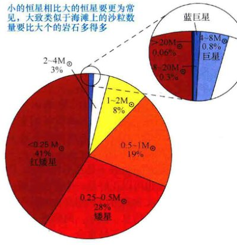
    <div class="caption">
        <strong>图17.23 恒星质量分布</strong><br>
        通过仔细测量太阳邻近区域内的恒星而确定的主序星质量分布范围。小的恒星相比大的恒星要更为常见，大致类似于海滩上的沙粒数量要比大个的岩石多得多。
    </div>

    <p>图17.24说明了主序星的半径和光度与其质量的关系。基于观测到的双星系统，两幅子图分别显示了质量-半径和质量-光度的关系。沿着主序，恒星半径和光度都随着质量增加。作为一条近似的经验法则，我们可以说，恒星半径的增加正比于恒星的质量，而光度的增加要快得多——差不多是质量的四次方，如图17.24(b)中的直线所示。因此，一颗两倍太阳质量的主序星的半径大约为太阳的两倍，而光度是太阳光度的16 ($2^4$) 倍；一颗质量为太阳质量20%的主序星半径大约为太阳半径的20%，而光度大约是太阳光度的万分之十六 ($0.2^4$)。</p>

    <!-- Page 24 -->
    <aside class="detailed-explanation">
        <h3>详细说明 6-3 测量双星系统中的恒星质量</h3>
        <p>如正文中所讨论的，大多数恒星都是双星系统的成员星——它们互相绕转，在引力的作用下束缚在一起。在这里，我们会说明——在理想情况下，如果已知相关的轨道参数——如何使用观测到的轨道数据，并结合我们的基本物理知识来确定成员星的质量。</p>
        
        <p>考虑太阳附近由亮星天狼星A和其暗弱的伴星天狼星B组成的目视双星系统，如附图所示。通过观测恒星互相的绕转，或是通过观测由于其暗弱的伴星而引起的天狼星A的来回摆动，可以简单地确定双星的轨道周期。周期几乎正好为50年。对轨道的直接观测也能得到轨道的半长轴，尽管在这种情况下，我们必须使用额外的开普勒定律来修正该双星系统相对于视线方向的46°倾角。轨道半长轴为20个天文单位——从2.7pc的距离测得的角大小为7.5"。（详细说明1-2）一旦我们知道了这些轨道参数，我们就可以利用修改后的开普勒第三定律来计算两颗恒星的总质量，结果是 $20^3/50^2 = 3.2$ 倍太阳质量。</p>
        
        <p>对轨道的进一步研究，使得我们能够确定各个恒星的质量。多普勒观测表明，天狼星A大约以其伴星速度的一半绕它们的质心运动。(2.5节) 这意味着天狼星A的质量一定是天狼星B的两倍。从而得到天狼星A和天狼星B的质量分别为2.1倍和1.1倍太阳质量。</p>
        
        <p>通常双星成员的质量计算是很复杂的，因为只有部分的信息已知——我们可能只能看见一颗恒星，或者可能只有分光速度信息可用（见17.7节）。尽管如此，本书中引用的每一颗恒星的质量几乎都是采用这种基本物理原则与详细观测相结合的方法来确定的。</p>
    </aside>

    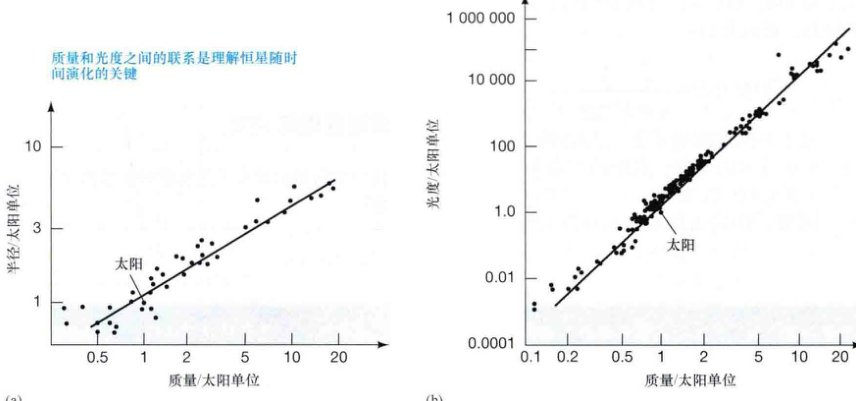
    <div class="caption">
        <strong>图17.24 恒星半径和光度</strong><br>
        (a) 主序星半径与质量的关系。实际观测表明，在很大范围内，恒星半径的增加几乎与质量的增加成正比（如穿过数据点的直线所示）。(b) 主序星光度与质量的关系。光度大致以质量的四次方增加（同样如图中直线所示）。质量和光度之间的联系是理解恒星随时间演化的关键。
    </div>

    <!-- Page 25 -->
    <table border="1">
        <caption>表17.5 一些著名的主序星的关键属性</caption>
        <tr>
            <th>恒星</th>
            <th>光谱型</th>
            <th>质量(M) / 太阳质量</th>
            <th>中心温度 / ×10<sup>6</sup> K</th>
            <th>光度(L) / 太阳光度</th>
            <th>估计寿命(M/L) / (10<sup>6</sup>年)</th>
        </tr>
        <tr>
            <td>角宿一B<sup>①</sup></td>
            <td>B2V</td>
            <td>6.8</td>
            <td>25</td>
            <td>800</td>
            <td>90</td>
        </tr>
        <tr>
            <td>织女星</td>
            <td>A0V</td>
            <td>2.6</td>
            <td>21</td>
            <td>50</td>
            <td>500</td>
        </tr>
        <tr>
            <td>天狼星A</td>
            <td>A1V</td>
            <td>2.1</td>
            <td>20</td>
            <td>22</td>
            <td>1000</td>
        </tr>
        <tr>
            <td>南门二</td>
            <td>G2V</td>
            <td>1.1</td>
            <td>17</td>
            <td>1.6</td>
            <td>7000</td>
        </tr>
        <tr>
            <td>太阳</td>
            <td>G2V</td>
            <td>1.0</td>
            <td>15</td>
            <td>1.0</td>
            <td>10 000</td>
        </tr>
        <tr>
            <td>比邻星</td>
            <td>M5V</td>
            <td>0.1</td>
            <td>0.6</td>
            <td>0.00006</td>
            <td>16 000 000</td>
        </tr>
    </table>
    <p style="font-size:0.9em; font-style: italic;">① “恒星”角宿一实际上是一个双星系统，主星是B1III型的巨星（角宿一A），伴星是一颗B2V型的主序星（角宿一B）。</p>

    <p>表17.5比较了几颗著名主序星的一些关键属性，按质量从大到小排列。注意，不同恒星之间，中心温度（利用类似于第5章里讨论过的数学模型得到）的差别相对较小，而光度的变化很大。(5.2节) 恒星内部快速的核燃烧在单位时间内释放了巨大的能量。那么这样的燃烧能够持续多久？简单地将可用的燃料（恒星的质量）除以燃料消耗的速度（恒星的光度）除以燃料消耗的速度，我们可以估计一颗主序星的寿命：</p>
    
    <p style="text-align: center; font-weight: bold;">恒星寿命 ∝ 恒星质量 / 恒星光度</p>
    
    <p>质光关系告诉我们，恒星的光度近似正比于质量的四次方，因此我们可以修改上面的公式，近似得到：</p>
    
    <p style="text-align: center; font-weight: bold;">恒星寿命 ∝ 1 / (恒星光度)<sup>3</sup></p>
    
    <p>基于上面的比例关系，表17.5的最后一列给出了估计出的寿命，太阳的寿命大约是100亿年（见第9章）。</p>
    <p>例如，10倍太阳质量的O型主序恒星寿命大约是太阳寿命的 $10/10^4 = 1/1000$，大约是1000万年。这类大质量恒星内部的核反应非常迅速，因此它的燃料很快就被耗尽，尽管它的质量很大。我们可以确定，所有现在观测到的O型和B型恒星都非常年轻——不到几千万年。年龄比此还大的大质量恒星，早已耗尽了燃料、不再释放大量的能量，它们实际上已经死亡了。</p>
    <p>在主序的另一端，较冷的K型和M型恒星质量比太阳小得多。它们的核心密度和温度都较低，质子反应慢慢吞吞，比太阳核心的反应缓慢得多。单位时间内释放的能量少，使得它们的光度也低，因此它们的寿命非常长。我们现在在夜空中看到的许多K型和M型恒星至少还会闪耀万亿年。大大小小的恒星的演化将是第9章和10章的主题。</p>

    <div class="concept-check">
        <h4>科学过程理解检查</h4>
        <p>❓ 我们如何得到那些不是双星成员星的恒星的质量？</p>
    </div>

    <div class="ultimate-question">
        <h3>终极问题</h3>
        <p>我们的太阳将随着年龄的增大而膨胀，大约在50亿年内，它会开始耗尽燃料，注定会迅速膨胀成为一颗红巨星。目前最吸引人的问题是，红巨星的太阳是否能膨胀到足以吞噬掉地球？这一问题经常被提起，然而由于时间还很遥远，很快又被忽视掉。没有人能确定这一点。我们知道的是，太阳正在失去大量的物质，从而使其引力变小。也许这将会使地球最终退后至相对安全的轨道上。</p>
    </div>

    <!-- Page 26 -->
    <section class="exercises">
        <h2>章节回顾</h2>
        <h3>小结</h3>
        <ol>
            <li>最近的恒星的距离可以通过<strong>三角视差</strong>方法来测量。视差为1角秒 (1") 的恒星距离地球为1<strong>秒差距</strong> (p.143)——大约为3.3光年远。</li>
            <li>除了由于地球绕太阳公转造成的视运动外，恒星在空间中也有真实的运动。恒星的<strong>自行</strong> (p.144)——即穿过天空的真实运动——可以用于测量垂直于我们视线方向的恒星运动速度。恒星的视向速度——沿着视线方向的速度——可以通过测量恒星谱线的多普勒位移得到。</li>
            <li>恒星的<strong>视亮度</strong> (p.145) 是到达探测器的恒星能量流量。视亮度随距离的平方降低。光学天文学家使用<strong>星等标度</strong> (p.146) 来表示并比较恒星的亮度——星等越大，恒星越暗；5个星等的差别对应着亮度的100倍变化。<strong>视星等</strong> (p.146) 是视亮度的量度。恒星的<strong>绝对星等</strong> (p.147) 是将其放置在距离观测者10 pc的标准距离上时所具有的视星等，是恒星光度的量度。</li>
            <li>通过测量恒星通过两个或更多光学滤光片的亮度，然后将结果与黑体曲线匹配，可以测得恒星的温度，天文学家常常采用这样的方法。测量透过一组滤光片的每个镜片的星光数量，这样的方法被称为<strong>测光</strong> (p.149)。恒星的光谱观测为确定恒星温度和恒星组分提供了准确的方法。天文学家根据恒星光谱里的吸收线进行分类。按温度递减的顺序，标准的<strong>恒星光谱型</strong> (p.151) 为O、B、A、F、G、K和M型。</li>
            <li>只有少数个头足够大、距离也足够近的恒星能够被直接测量得到半径。大多数恒星的大小是间接地利用<strong>半径-光度-温度关系</strong> (p.153) 估计得到的。大小与太阳相当或更小的恒星被分成<strong>矮星</strong> (p.154)，比太阳大但不超过100倍的恒星被称为<strong>巨星</strong> (p.154)，而大小超过太阳尺寸100倍的恒星被称为<strong>超巨星</strong> (p.154)。除了像太阳这样“正常的”恒星外，还有两类重要的恒星：一类是个头大、温度低但明亮的<strong>红巨星</strong> (p.154)（以及红超巨星）；一类是个头小、温度高但暗弱的<strong>白矮星</strong> (p.154)。</li>
            <li>恒星光度与恒星光谱型（或温度）的示意图叫作<strong>赫罗图</strong> (p.154) 或<strong>颜色-星等图</strong> (p.154)。赫罗图上，大约90%的恒星位于<strong>主序</strong> (p.155)，它们从炽热并明亮的<strong>蓝超巨星</strong> (p.156) 开始，穿过像太阳这样的中等大小的恒星，一直延伸到温度低并且暗弱的<strong>红矮星</strong> (p.156)。大多数主序星是红矮星，蓝巨星则非常罕见。大约9%的恒星位于<strong>白矮星支</strong> (p.156)，而剩下的1%则位于<strong>红巨星支</strong> (p.156)。</li>
            <li>如果已知一颗恒星位于主序，那么测量它的光谱型就能够估计得到它的光度并由此计算出恒星的距离。这一确定距离的方法被称为<strong>分光视差法</strong> (p.157)，对距离地球在几千秒差距内的恒星都有效。恒星的<strong>光度型</strong> (p.158) 使得天文学家能够区分同一光谱型的主序星、巨星和超巨星。</li>
            <li>天空中大多数的恒星都不是孤立的，而是绕着其他恒星运行的<strong>双星系统</strong> (p.160)。<strong>目视双星</strong> (p.160) 中的两颗成员星可见，轨道也可知。<strong>分光双星</strong> (p.160) 的成员星不能被分辨，但可以通过光谱观测来探测它们的轨道运动。从地球上观测时，<strong>交食双星</strong> (p.161) 的轨道朝向使得一颗恒星周期性地在另一颗恒星前面穿行，使我们接收到的星光变暗淡。</li>
            <li>确定恒星的质量可以：(a) 通过测量它的光度；(b) 通过确定它的成分；(c) 通过测量它的多普勒位移；(d) 通过研究它绕双星伴星运动的轨道。</li>
        </ol>
    </section>

    <!-- Page 27 -->
    <section class="exercises">
        <h3>复习与讨论</h3>
        <ol class="question-list">
            <li><strong>LO1</strong> 如何利用视差测量恒星的距离？什么是秒差距？</li>
            <li><strong>LO2</strong> 说明从地球上观测时，恒星的真实运动转换成哪两种方式的运动。</li>
            <li><strong>LO3</strong> 天文学家如何测量恒星的光度？光度和视亮度之间有什么区别？</li>
            <li>天文学家如何测量恒星的温度？</li>
            <li><strong>LO4 POS</strong> 简要描述如何根据恒星的光谱性质来进行恒星分类。</li>
            <li><strong>LO5</strong> 描述天文学家如何测量恒星的半径。列出红巨星和白矮星的一些性质。</li>
            <li>为什么一些恒星光谱中氢的吸收线非常少？</li>
            <li>将恒星画到赫罗图上需要知道恒星的什么信息？</li>
            <li><strong>LO6</strong> 什么是主序？恒星的什么基本属性决定了它在主序上的位置？</li>
            <li>为什么基于亮星数据绘制的赫罗图与基于近邻恒星数据绘制的赫罗图有如此大的不同？</li>
            <li><strong>LO7</strong> 分光视差能确定的距离有多远？</li>
            <li>银河系中最常见的恒星是什么？为什么我们在赫罗图中看到它们的数量并不多？银河系中最少见的恒星是什么？</li>
            <li><strong>LO8 POS</strong> 如何通过观测双星系统来确定恒星的质量？</li>
            <li>大质量恒星开始燃烧时的燃料比小质量恒星的燃料要多得多。为什么大质量恒星的寿命反而要短？</li>
            <li><strong>POS</strong> 一般情况下，是否能够利用一颗恒星在赫罗图上的位置来确定它的年龄？为什么？</li>
        </ol>

        <h3>概念自测：选择题</h3>
        <ol class="question-list">
            <li><strong>VIS</strong> 如果地球绕太阳的公转轨道小一些，图17.1（“恒星视差”）中恒星的视差角会：(a) 变小；(b) 变大；(c) 不变。</li>
            <li>从1 pc的距离上观看，地球轨道的角大小为：(a) 1°；(b) 2°；(c) 1'；(d) 2"。</li>
            <li>根据平方反比律，如果灯泡的距离增加5倍，那么灯泡的视亮度会：(a) 保持不变；(b) 变暗5倍；(c) 变暗10倍；(d) 变暗25倍。</li>
            <li>与距离为100 pc、绝对星等为-2等的恒星相比，距离为10 pc、绝对星等为5等的恒星看起来：(a) 亮一些；(b) 暗一些；(c) 亮度一样；(d) 更蓝。</li>
            <li><strong>VIS</strong> 冥王星的视星等大约为14等。根据图17.7（“视星等”），冥王星：(a) 在黑夜肉眼可见；(b) 通过双筒望远镜可见；(c) 使用1m口径望远镜可见；(d) 只能使用哈勃太空望远镜观看。</li>
            <li>光谱型为M型的恒星光谱中没有很强的氢线是因为：(a) 它们含的氢很少；(b) 它们的表面温度太低，大多数氢都处于基态；(c) 它们的表面温度太高，大多数氢都被电离了；(d) 氢线被其他元素的更强的谱线淹没掉了。</li>
            <li>温度低的恒星可能也会非常明亮，如果它们非常：(a) 小；(b) 热；(c) 大；(d) 靠近太阳系。</li>
            <li><strong>VIS</strong> 根据图17.13（“著名恒星的赫罗图”），巴纳德星一定：(a) 较热；(b) 较大；(c) 距离较近；(d) 比比邻星蓝。</li>
            <li><strong>VIS</strong> 图17.15（“最亮恒星的赫罗图”）中，织女星和大角星在纵轴上对应的位置几乎相同。这意味着大角星一定比织女星：(a) 热；(b) 暗；(c) 大；(d) 光谱型相同。</li>
            <li>确定恒星的质量可以：(a) 通过测量它的光度；(b) 通过确定它的成分；(c) 通过测量它的多普勒位移；(d) 通过研究它绕双星伴星运动的轨道。</li>
        </ol>

        <!-- Page 28 -->
        <h3>问答</h3>
        <ol class="question-list">
            <li>● 视差为0.012"的恒星角宿一的距离有多远？如果在海王星的卫星海卫一上的天文台观测，随着海王星绕太阳公转，测得的角宿一的视差是多少？</li>
            <li>●● 一颗恒星距离太阳为20 pc，自行为0.5"/年。那么恒星的横向速度是多少？如果观测到的恒星谱线发生了0.01%的红移，请计算该恒星相对于太阳的三维运动速度。</li>
            <li>● 一颗半径为三倍太阳半径、表面温度为10,000K的恒星的光度是多少？</li>
            <li>●● 距离太阳10 pc时，计算观测到的太阳能量流量（单位时间内单位面积接收到的能量）。将你的结果与地球的太阳常数相比。</li>
            <li>●● 两颗恒星——A和B，光度分别为50和4.5倍太阳光度——它们看起来视亮度相同。哪一颗恒星更远？它比另一颗恒星远多少？</li>
            <li>● 一颗恒星的视星等为10.0等，绝对星等为2.5等。它距离我们多远？</li>
            <li>●● 利用图17.7显示的数据，计算一颗类太阳恒星的距离最远为多少时，能用(a)双筒望远镜，(b)标准的1m口径望远镜，(c)口径为4m的望远镜，以及(d)哈勃太空望远镜看见。</li>
            <li>●● 已知太阳的寿命大约是100亿年，估计下列恒星的预期寿命 (a) 一颗20%太阳质量，1%太阳光度的红矮星，(b) 一颗3倍太阳质量，30倍太阳光度的恒星，(c) 一颗10倍太阳质量，1000倍太阳光度的蓝巨星。</li>
        </ol>

        <h3>实践活动</h3>
        
        <h4>协作项目</h4>
        <p>估计夜空中可见恒星的总数。你所在小组的每个成员应该配备相同的硬纸管——厨房用纸或卫生纸中心的卷筒看似平淡无奇，但却十分适合这样的任务。在一个晴朗的无月夜，通过硬纸管观测并统计你可以看见的恒星总数。这样多做几次，随机挑选天空中不同的区域，并避免云或树的遮挡。试着在各个方向观测大致相同的次数。在每次计数时保持纸管不动。每次测量前，留一定的时间以保证你的眼睛适应黑暗——至少10~15 min。将你的测量结果累加起来并除以观测的总数，计算得到恒星的平均观测数目——用 $N_{avg}$ 来表示。将此数字乘上纸管长度 $L$ 与纸管直径 $D$ 的比例的平方，即 $N = (L/D)^2 \times N_{avg}$，你可以转换得到可见恒星总数 $N$ 的估计值。（你能找出这一公式从何而来的吗？）在不同的观测地点重复你的测量——至少在城市、郊区或者漆黑的农村。你就能理解为什么天文学家为何如此在意光污染对他们工作的影响了。</p>

        <h4>个人项目</h4>
        <p>每个冬季，在夜晚的天空中，你都可以经历一堂天文课程。位于五个不同星座的六颗明亮的恒星组成了冬季大圆环——一种由恒星组成的星宿图案，包括天狼星、参宿七、参宿四、毕宿五、五车二和南河三。这些恒星几乎覆盖了正常恒星的整个颜色（即温度）范围。参宿七是B型星，天狼型是A型，南河三是F型，五车二是G型，毕宿五是K型，参宿四是M型。很容易就能发现这些恒星的颜色差异。在冬季大圆环中没有O型恒星，你怎么看待这一点？</p>
    </section>

</article>